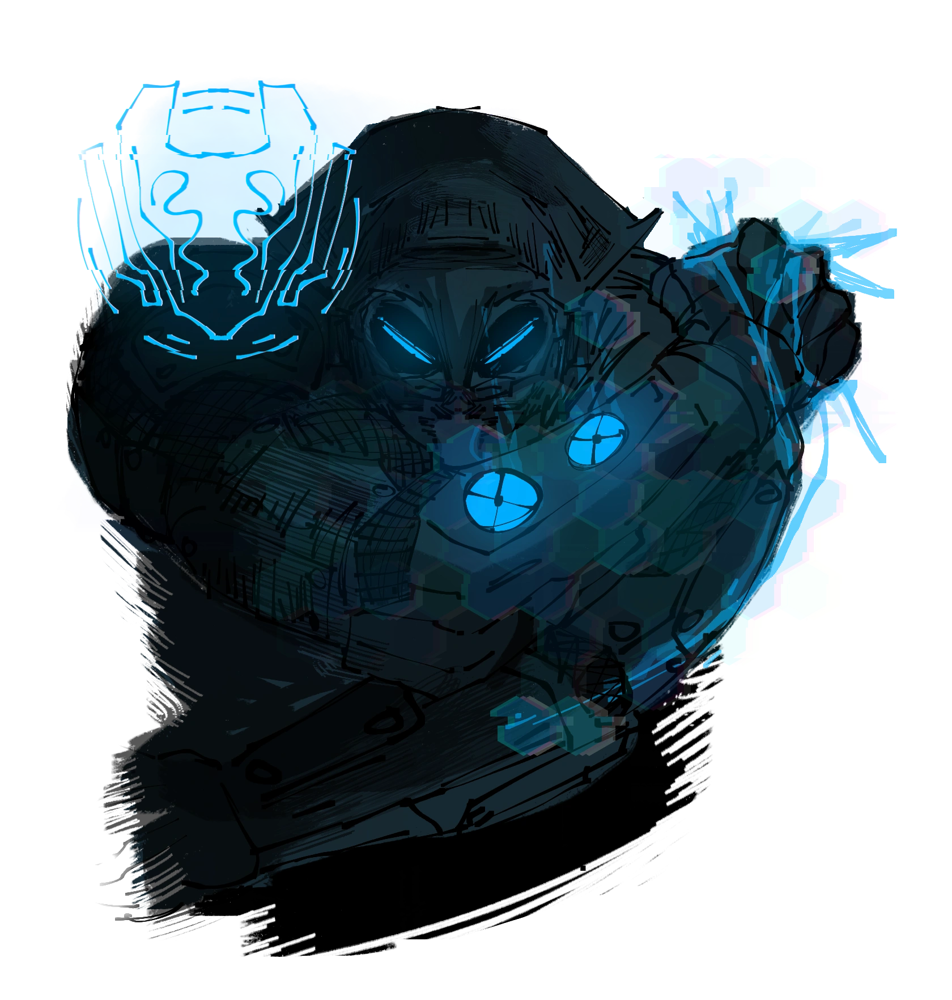
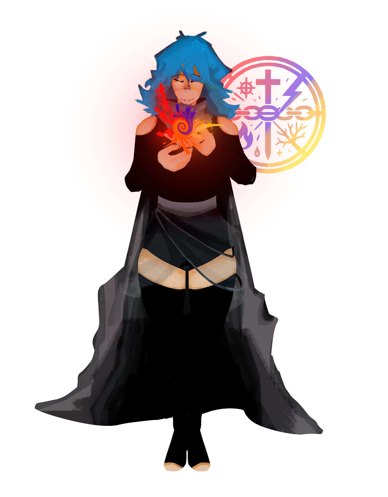
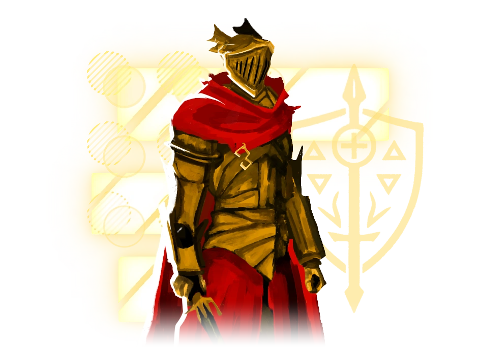
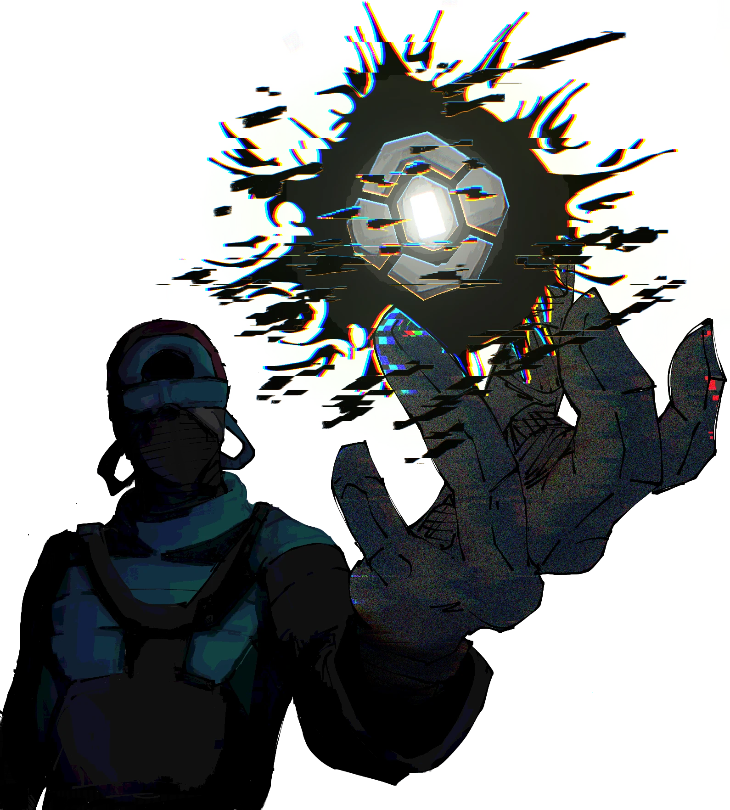
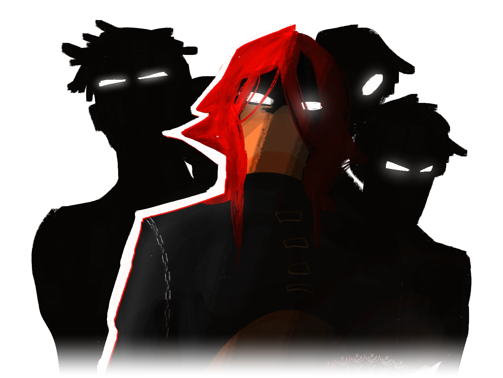
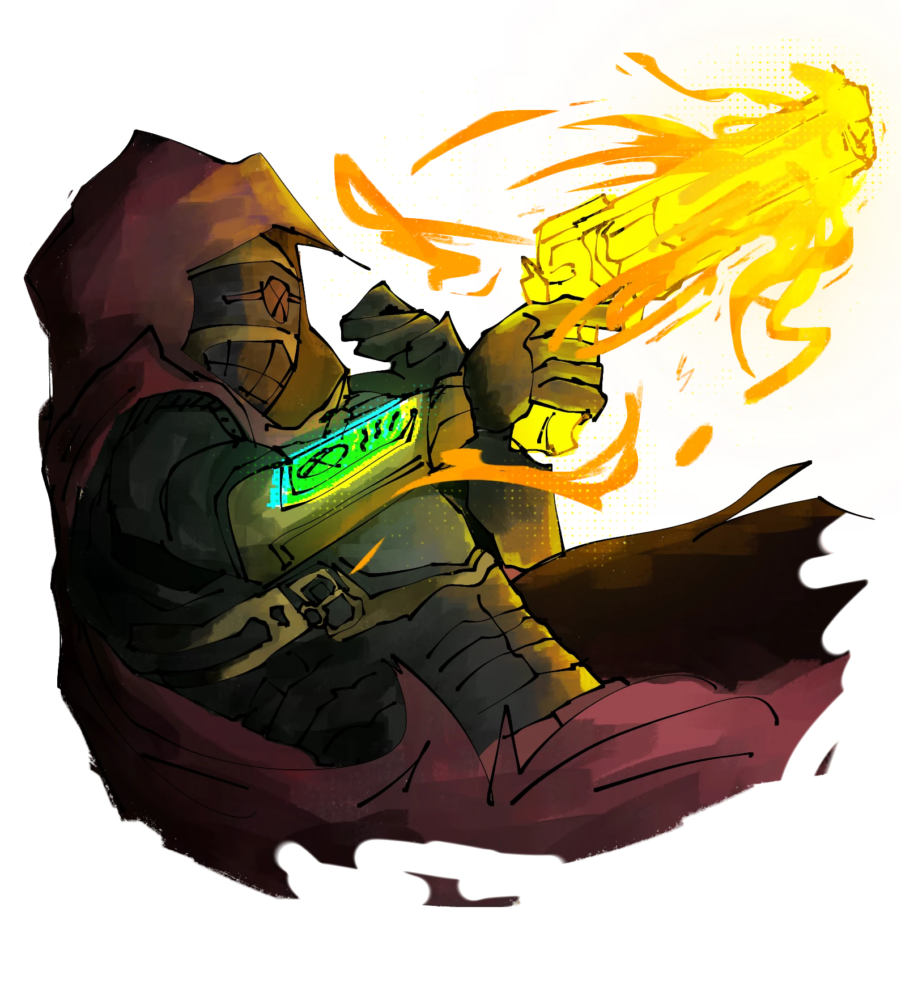
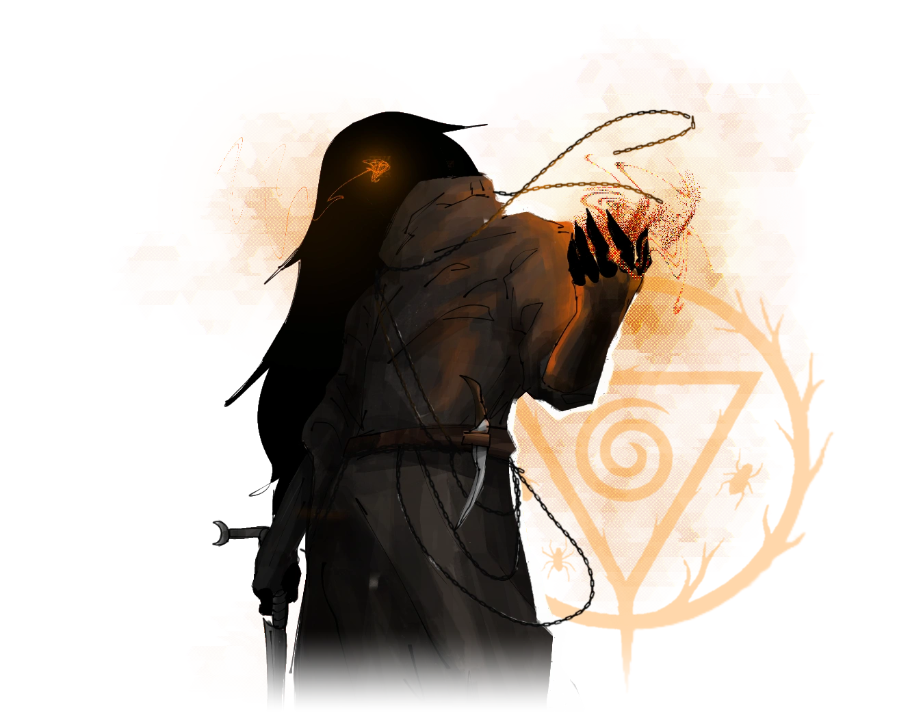
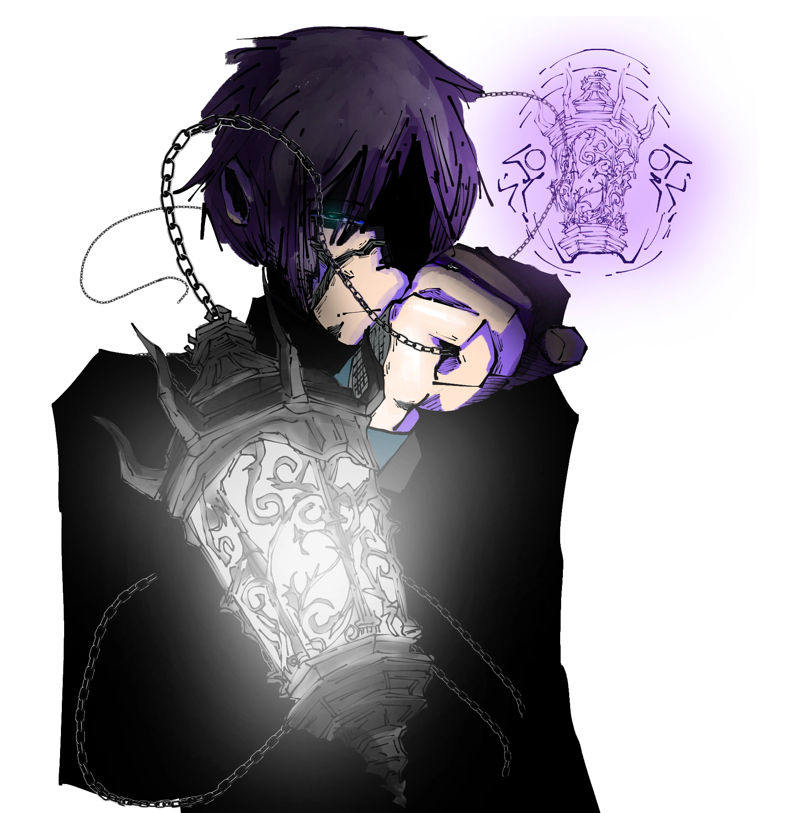

Classes
Em Wuitalur, as classes representam diferentes tipos de habilidades e estilos de combate que os jogadores podem escolher ao criar seu personagem. Cada classe oferece uma abordagem única para o jogo, permitindo que o jogador experimente diversas formas de interagir com o mundo. Algumas classes são mais focadas em ataques rápidos e furtivos, enquanto outras podem ser especialistas em resistir a danos ou em habilidades mágicas. A classe escolhida determinará como o personagem evolui, que habilidades ele desbloqueia, e como ele se comporta nas batalhas e nas situações do jogo.
Importante: À medida que uma classe sobe de nível, o jogador tem a oportunidade de aprimorar suas habilidades. A cada novo nível em que uma classe desbloqueia habilidades, o jogador deve escolher UMA entre duas opções diferentes, cada uma oferecendo um caminho único para o desenvolvimento do personagem. (Essa mecânica não está aplicada para todas as classes ainda). Essa mecânica de escolha permite que cada jornada seja personalizada, proporcionando uma experiência única e estratégica para o jogador, já que a escolha de uma habilidade pode impactar diretamente a forma como o personagem interage com o mundo e enfrenta os desafios do jogo.
Índice de Classes

Compactador
Devido a suas habilidades excepcionais e peculiaridades físicas, os Compactadores são frequentemente chamados de "Dobradores da Vida". Esse título reflete sua capacidade de moldar não apenas a energia astral, mas também a essência espiritual de outros seres. Essa prática exige um imenso esforço e disciplina, sendo um caminho repleto de desafios tanto mentais quanto físicos.
Compactadores são indivíduos fascinantes e profundamente dedicados ao estudo da Energia Astral, uma das Energias Vitais mais complexas e misteriosas do mundo. Sua maestria nesse campo é incomparável, permitindo-lhes manipular essa energia com uma precisão e habilidade que poucos ousam alcançar.
Compactadores são capazes de dobrar a forma astral de outros seres, moldando-a e adaptando-a de maneiras que desafiam a compreensão convencional, enquanto mantêm sua própria forma física intacta. No campo de batalha ou em situações críticas, os Compactadores se destacam como manipuladores estratégicos da essência astral. Sua habilidade de interferir nas formas astrais dos inimigos ou aliados os torna imprevisíveis e incrivelmente versáteis. Contudo, a prática excessiva de seus dons pode trazer graves consequências, como o desgaste energético e mental, exigindo que equilibrem cuidadosamente o uso de seu poder.
"Ser um Compactador é abraçar a complexidade da existência astral, explorando as nuances entre poder e sacrifício."
Essa classe ganha +2 em Saúde naturalmente.
Características da Classe
Proficiências
Bônus de Proficiência
Dano Base de Energia Astral
Mecânica Estados de Compactação
Os Estados de Compactação são manifestações diretas da manipulação da forma astral. Ao aplicar um Estado, o Compactador altera temporariamente a estrutura espiritual de um alvo, influenciando seu desempenho físico, mental e energético.
Um alvo só pode ser afetado por um Estado de cada tipo por vez. O Compactador pode manter até 2 Estados ativos simultaneamente (em qualquer combinação de alvos). Os Estados duram um número limitado de turnos e exigem esforço contínuo para serem mantidos, refletindo o risco inerente à manipulação astral.
Compressão
A Compressão é o ato de reduzir e condensar a forma astral, forçando sua energia a ocupar um espaço menor do que naturalmente deveria. Esse processo gera uma pressão interna extrema, transformando a essência em algo mais denso, pesado e explosivo. Quando aplicada, a forma astral entra em um estado de tensão constante, como uma mola comprimida prestes a liberar energia.
Em si mesmo: Dobra o dado de dano dos ataques, porém só dos punhos ou da arma, além de perder 2B de deslocamento.
Em um Alvo: O Alvo recebe Xd10 de dano extra de todas as fontes, sendo X a proficiência do compactador, além de todos os ataques ignorarem 25% da defesa do alvo. Porém, o alvo também aumenta suas fontes de dano em 2d8.
Estabilização
A Estabilização reorganiza a forma astral em um padrão harmônico, corrigindo falhas, alinhando fluxos de energia e reforçando sua coesão estrutural. É como "reancorar" a existência do alvo, impedindo que forças externas o desestabilizem.
Em si mesmo: O usuário recebe 20% de redução de dano de todas as fontes, além de receber regeneração de vida igual a Saúde por turno. Porém, diminui em 10% seu dano causado.
Em um Alvo: O Alvo recebe um escudo de 25HP, além de uma regeneração de 1d6 de HP ou Energia (a escolha do Compactador) por turno. Porém, diminui um dado de dano do seu maior dado de dano, por exemplo se possui uma arma que causa 2d15 de dano, o ataque causará 1d15 de dano.
Distorção
A Distorção rompe a coerência da forma astral, desalinhando seus componentes e criando assincronia entre intenção, energia e ação. O alvo ainda existe, mas sua existência deixa de ser "precisa".
Em si mesmo: Aplica imprevisibilidade em si mesmo, dessa forma, ele cria uma chance de 50% do ataque inimigo não acertar (o atacante rola 1d10, caso caia de 5 para baixo, não acerta), além de não poder ser surpreendido, ignorando fontes de dano extra como ataque furtivo, ataques de oportunidade. Porém, cria a possibilidade de 30% de chance de nada que fizer funcionar (rola 1d10, caso caia de 3 para baixo, suas ações falham).
Em um Alvo: Ao aplicar distorção em um Alvo, ele recebe uma penalidade de -5 em acertos e reduz o deslocamento do alvo pela metade. Porém, todos os atacantes possuem um debuff de -2 para acertar o alvo.
O Compactador escolhe qual Estado de Compactação aplicar ao acertar o alvo e cada estado dura 1d4 turnos. Pode manter 2 estados ativos simultaneamente e +1, caso venha de uma habilidade. Quando usa sua ação para recuperar energia astral, ao invés de recuperar 180, recupera 280.
Habilidades
Punho de Inércia
O Compactador concentra sua forma astral no próprio braço, comprimindo sua essência até o limite antes do impacto. No momento do golpe, essa energia é liberada de forma abrupta, causando uma transferência violenta de força. O usuário causa o dano base de energia astral + seu dano de ataque corpo a corpo, além de aplicar Compressão no alvo. Caso já possua um efeito de compressão, o alvo recebe "quebra de defesa" por uma rodada. +1 de Saúde ou RF. Ação Bônus -25 de Energia Astral
Revestimento Essencial
O Compactador reorganiza sua forma astral em uma estrutura coesa e resistente, criando uma camada invisível que absorve impactos e estabiliza sua existência. Dessa forma, o Compactador ganha um escudo de 25 de HP, além de aumentar sua Def em +10 (limite máximo igual à metade da proficiência). Aplica também Estabilização em si mesmo e caso esteja em Compressão, seu escudo dobra para +50HP e a Def aumenta em +15. Ação Bônus -30 de Energia Astral
Distorção de Ritmo
O Compactador interfere no fluxo da forma astral de um inimigo, criando um descompasso entre intenção e execução. O alvo deve passar num teste de resistência mágica CD (10+Prof+Saúde), caso falhe, o alvo possui desvantagem em suas ações de ataque por 1d4 turnos, além de perder 10% de sua defesa até o final da habilidade. Aplica Distorção no alvo e se o alvo estiver sobre o efeito de Compressão, recebe chance de +10% de falha em suas ações. Ação Padrão -40 de Energia Astral
Troca de Estrutura
O Compactador consegue mudar o estado de compactação de dois alvos que possa ver e estejam com algum estado de compactação, além de poder agora, usar dois estados de compactação simultâneos em um único Alvo. (para aliados, agora pode usar a caracterização "Em si mesmo" ao invés de "Em um alvo"). Ação Bônus -35 de Energia Astral
Núcleo Condensado
O Compactador cria um ponto físico de energia astral comprimida dentro de si, funcionando como uma reserva instável de poder. A cada turno que se passa após declarar uso dessa habilidade, ganha um bônus de +2 (até um máximo acumulativo de +6). Quando ativa a habilidade ganha um bônus de +6 em acerto e bônus de dano ou regeneração igual a Xd8 de dano, sendo X metade do seu bônus de proficiência. +1 em Saúde, Força ou RF. Ação Bônus -50 de Energia Astral
Ataque Extra
O Compactador pode fazer mais um ataque com a mesma ação de ataque no turno dele, a quantidade de ataques extras aumenta para 2 no nível 15. Passiva
Fratura de Impacto
Um golpe direcionado na forma astral do inimigo, buscando acertar suas instabilidades e fraquezas. Caso o Compactador acerte esse golpe, o alvo recebe 2 dados de dano extra do golpe corpo a corpo + 1 dado de dano extra do dano base de Energia Astral. Aplica Compressão e remove todas as resistências do alvo por 2 turnos. Se o alvo já estiver com o estado de Distorção, os dados extra de dano aumentam em +1 cada. Ação Padrão -40 de Energia Astral
Ancoragem Absoluta
O Compactador fixa sua forma astral no espaço, tornando-se um ponto estável impossível de deslocar. Ao utilizar essa habilidade, se não se mover nenhum bloco, o compactador reduz em 50% todo dano recebido, além de o alvo ter que passar em um teste de Int (CD 10+Saúde+Proficiência), caso falhe, sua energia astral é distorcida e é forçado a se manter engajado corpo a corpo contra o Compactador. Ação Bônus -70 de Energia Astral
Colapso Dirigido
O Compactador força a forma astral de um alvo ou a sua própria a colapsar sobre si mesma, explorando todas as interferências já existentes. Ao utilizar essa habilidade, o compactador consome todos os estados de compactação aplicados e ativos no momento. Caso consuma Compressão, dobra seus dados de dano nos próximos dois ataques. Caso consuma Estabilização, cura sua vida em 2d14+Saúde. Caso consuma Distorção, pode aplicar qualquer condição da lista de condições em um Alvo que possa ver e que já tenha sido alvo de algum estado de compactação. Ação Bônus -75 de Energia Astral
Esmagamento Vetorial
O Compactador comprime violentamente o espaço astral ao redor de um alvo, forçando todas as forças próximas a convergirem para um único ponto. O Compactador consome todos os estados de compactação que um alvo possui e transforma em dano, uma Compressão aumenta 3 dados de dano, outros estados aumentam em 2 dados de dano, sendo o dano base de energia astral da classe. Além disso, o alvo fica Paralisado por uma rodada. Ação Bônus -80 de Energia Astral
Campo de Assimetria
O Compactador expande sua forma astral ao redor do ambiente, criando uma região onde a coerência da realidade é constantemente perturbada. O usuário cria em volta de si uma área de 4B de raio, nessa área os inimigos sofrem Distorção contínua, perdendo 20% de chance de acerto e -2B de deslocamento cada rodada que passarem dentro dessa área. A habilidade dura 1d4 turnos. Ação Padrão -90 de Energia Astral
Forma Inabalável
O Compactador estabiliza sua forma astral ao extremo, transformando-se em uma estrutura quase impossível de interromper. Nesse estado, o Compactador reduz seu deslocamento para apenas 3B por turno, porém recebe um escudo de 75HP, recebe imunidade a quaisquer efeitos enquanto o escudo estiver ativo e aplica Estabilização em uma área de 6B. Dura 1d4 turnos. Ação Padrão -120 de Energia Astral
Reversão Estrutural
O Compactador inverte instantaneamente a interferência astral recebida. Sempre que receber um estado de algum agressor, como sangramento, por exemplo, pode refletir ao agressor ou transferir para outro alvo a até 9B de distância dele. Reação -70 de Energia Astral
Sombra Astral
O usuário manifesta sua energia astral como uma sombra que replica todos os seus movimentos, como se fosse um segundo Compactador. A Sombra possui a mesma vida e defesa do Compactador, porém só causa o dano de um golpe desarmado do compactador, sem quaisquer danos extra. Ação Bônus -60 de Energia Astral
Singularidade Astral
O Compactador força múltiplas formas astrais a colapsarem em um único ponto de densidade extrema. Todos os alvos em um raio de 6B devem realizar um teste de RM (CD 10+Saúde+Força), caso falhem, recebem compressão máxima, isto é, recebendo os efeitos de "Em um Alvo" e dano contínuo igual ao dano base de energia astral todo turno em que o alvo passar na área. Ação Completa -200 de Energia Astral
Forma Transcendente
O Compactador abandona parcialmente sua estrutura física, existindo entre estabilidade e distorção. Nessa forma, o compactador consegue manter os 3 estados de compactação em si mesmo, porém sem nenhuma das desvantagens desses estados, além de causar o triplo de dano com seus ataques, receber resistência a todo tipo de dano e escudo de +20 de vida a cada turno que estiver com essa habilidade ativa. Esse estado dura algumas rodadas e quando termina o Compactador recebe fraqueza e fica atordoado. Ação Padrão -300 de Energia Astral
Compactadores Famosos
- Nenhum

Consagrados
Consagrados são indivíduos que dedicam suas vidas a religiões ou crenças em deuses poderosos, buscando alcançar os benefícios concedidos por essas entidades ou simplesmente venerando os deuses pelos valores e atributos que representam. Alguns seguem uma fé religiosa, dedicando-se a rituais e práticas espirituais para obter favores, sabedoria ou proteção divina, enquanto outros fazem pactos diretos com os deuses, em troca de habilidades especiais ou poderes concedidos.
Esses seguidores podem ser tanto fervorosos devotos, que praticam suas crenças de maneira profunda e comprometida, quanto indivíduos pragmáticos, que veem a relação com seus deuses como uma troca de interesses, buscando obter algum tipo de poder ou vantagem em suas jornadas. A razão para seguir um deus pode variar: desde uma busca por iluminação espiritual até um desejo de fortalecer-se com as bênçãos da divindade adorada.
Cada deus tem seus próprios seguidores, com características únicas e dons especiais que são concedidos a aqueles que se comprometem com suas doutrinas e crenças. A conexão com essas entidades pode alterar profundamente a vida dos seguidores, proporcionando habilidades especiais ou poderes, como cura, proteção, manipulação de elementos ou controle sobre forças sobrenaturais. Em troca, o seguidor deve honrar o pacto ou seguir os preceitos do deus, o que pode incluir rituais, sacrifícios ou tarefas que exigem sacrifício pessoal.
Esses indivíduos podem se tornar agentes poderosos de suas divindades, capazes de realizar feitos extraordinários. No entanto, essa ligação com os deuses nem sempre é simples, pois pode haver exigências ou consequências inesperadas para aqueles que falham em cumprir suas promessas ou desrespeitam seus pactos.
Características da Classe
Proficiências
Bônus de Proficiência
Equipamentos Iniciais
Mecânica de Classe "Selos Divinos"
Os Consagrados recebem habilidades à medida que sobem de nível. Devido à natureza complexa de sua magia, essa classe possui uma estrutura de progressão única.
A verdadeira personalização da classe nasce do seu sistema de Selos, manifestações sagradas concedidas diretamente pela divindade. Todo Consagrado começa com acesso a um número de Selos igual à sua FAMA.
Os Selos não fazem parte da progressão natural de nível. Eles são escolhidos na criação do personagem e se expandem conforme sua FAMA cresce. A partir do Nível 3, o Consagrado deve escolher entre duas doutrinas: a Via do Zelote ou a Via do Teurgo, determinando como sua fé molda a realidade.
A Lista dos selos disponíveis pode ser encontrada no final do sistema.
Habilidades de Classe
Catalisador Divino
"O Consagrado não apenas ora; ele se torna o próprio canal por onde a vontade das divindades se manifesta na realidade física."
Você pode canalizar sua Energia Astral de forma mais eficiente. Sempre que ativar um Selo, role 1d10 x Proficiência. O valor resultante é reduzido do custo total de Energia Astral do Selo. Além disso, você recebe Cosmos como perícia treinada. Passiva
Redução de Custo
Vínculo Elemental
"Sua devoção se cristaliza em uma afinidade elemental pura."
Escolha um Elemento para se vincular. O custo de Energia Astral para Selos desse elemento é reduzido em 10 (mínimo 1) e a Dificuldade (CD) para resistir aumenta em +2. Passiva
Confluência de Selos
"Através de meditação e sacrifício, o corpo do Consagrado se adapta à pressão elemental dos deuses."
Você recebe +1 Selo adicional de sua divindade. Além disso, você aprende a Ampliar Selos: gastando uma Ação Bônus e +45 EA, você pode dobrar o alcance ou o raio de efeito de qualquer Selo que ativar neste turno. Seus Selos de Influência 1 agora causam +1d6 de dano/cura extra. Ação Bônus -45 de Energia Astral
Consulte sua Doutrina Escolhida
Você pode sustentar a concentração de um Selo ativo como Ação Bônus em vez de Ação Padrão. Além disso, todos os inimigos que iniciarem o turno dentro da área de um dos seus Selos ativos sofrem uma penalidade de -2 em Testes de Resistência (RE/RF). Passiva
Você recebe +1 Selo adicional. Você agora pode manter dois Selos ativos simultaneamente (pagando o custo de ambos). Se ambos os Selos forem da mesma divindade, o custo de manutenção do segundo Selo é reduzido pela metade. Passiva
Você aprende a Acelerar Selo: uma vez por cena, você pode ativar um Selo como uma Ação Livre. Além disso, você recebe imunidade ao dano elemental causado pela sua própria divindade e seus Selos ignoram qualquer tipo de Resistência a Dano (RD) elemental. Passiva
Recebe +2 Selos adicionais. Uma vez por cena, você pode entrar em estado de Apoteose por 3 Rodadas. Durante este tempo:
Ao final da Apoteose, você fica Exausto até o fim do combate devido à sobrecarga divina. Ação Padrão -500 de Energia Astral
Opções de Doutrina
Doutrina do Campeão
"O corpo é apenas combustível para a vontade divina."
Focado em poder bruto, sacrifício e especialização elemental.
Fúria Sagrada Nível 3
Seu fervor queima os impuros. Ao causar dano com um Selo, você pode somar sua Proficiência ao total de dano causado. Adicionalmente, você ganha proficiência com Armaduras Pesadas. Passiva
Purgar o Infiel Nível 6
Sua fé não encontra obstáculos. Seus Selos do elemento que se vinculou ignoram qualquer Resistência a Dano desse elemento. E caso o alvo tenha resistência a esse elemento, ele não pode se curar ou receber pontos de vida até o início do seu próximo turno. Passiva
Baluarte da Fé Nível 8
Enquanto mantiver um Selo do seu elemento vinculado ativo, você recebe Redução de Dano igual à sua (RE + RF + FAMA) contra todos os danos. Passiva
Martírio Vingativo Nível 12
Quando sofre dano que o levaria a 0 PV, você pode usar sua Reação para ativar imediatamente um Selo de "Toque" ou "Pessoal" antes de cair (em si mesmo ou no atacante) sem custo de Energia Astral. Reação
Avatar da Destruição Nível 15
Onde outros falham, você esmaga. Seus Selos de Influência 2 ou superior causam 2d8 de dano contra criaturas que já estejam feridas. Para selos que dependam de testes, o alvo sofre -2 nesse teste caso esteja com a METADE de seus PVs. Passiva
Glória Final Nível 20
Sua Apoteose é terrível de contemplar. Enquanto estiver em Apoteose, você emite uma aura de 9B. Inimigos na aura sofrem dano de seu elemento igual ao sua (FAMA * 3) + Seus PVs Máximos no início de cada turno de uma rodada (Não somente do Consagrado) e têm Desvantagem -2 em quaisquer testes contra seus Selos. Além de tudo isso, se o Consagrado for bem sucedido em um teste de Intelecto após o fim da Apoteose, ele não recebe a condição Exausto. Passiva em Apoteose
Doutrina do Profeta
"Conhecimento é a prece mais duradoura."
Focado em versatilidade, conhecimento e um vasto arsenal de rituais.
Arquivista Sacro Nível 3
Sua mente é uma biblioteca viva. Você aprende imediatamente uma quantidade de Selos Adicionais (de qualquer elemento) igual ao seu valor de Intelecto. Passiva
Pergaminho Litúrgico Nível 6
Você pode gastar 1 Rodada (em combate) ou uma ação simples (fora de combate) para inscrever um Selo que conhece em um pergaminho, gastando seus materiais e EA antecipadamente. O pergaminho dura até ser usado e pode ser ativado por você ou um aliado como Ação Padrão sem custo de EA. Limite de pergaminhos ativos: igual sua Proficiência. Crafting
Geometria Sagrada Nível 8
Você compreende a matemática divina. Ao lançar um Selo de área, você pode "esculpir" o efeito, escolhendo um número de criaturas igual ao seu Intelecto para serem totalmente imunes ao efeito de área do elemento do Selo. Passiva
Fluxo Contínuo Nível 12
A magia não se perde, se transforma. O consagrado pode potencializar um selo por gastar respectivos turnos se concentrando nele.
Durante a concentração, o Consagrado não pode fazer outras ações, nem se mover. Além disso, caso seja atacado durante a concentração, perde 1 turno de progresso. Passiva
Improvisação Divina Nível 15
Você acessa o conhecimento universal. Uma vez por cena, você pode ativar um Selo que não conhece, desde que seja de um elemento que você tenha acesso. Esse uso custa o dobro de Energia Astral. Ação Padrão
Consciência Onipresente Nível 20
Para os olhos de um deus, distância não existe. Durante a Apoteose, o alcance de todos os seus Selos torna-se "Vista" e você pode originá-los a partir de qualquer ponto que possa ver (como se você estivesse lá). Além disso, se o Consagrado for bem sucedido em um teste de Intelecto após o fim da Apoteose, ele não recebe a condição Exausto. Passiva em Apoteose
Consagrados Famosos
- Friede HollyLight
- Annie
- Elleonor Pakaro
Bestial
Bestiais são indivíduos que estabeleceram uma conexão sagrada com os misteriosos e pouco conhecidos Deuses Bestiais, divindades ligadas aos aspectos mais primordiais e selvagens da natureza. Esses deuses conferem a seus seguidores dons únicos, permitindo-lhes manifestar características animais, como garras afiadas, sentidos aguçados ou uma força descomunal, e até mesmo transformar partes de seus corpos ou o corpo inteiro em uma criatura escolhida pelo deus.
O mais famoso entre os Deuses Bestiais é Fylax, o Deus Gato, símbolo de agilidade, independência e mistério, mas há muitos outros deuses, cada um representando diferentes animais e características. O animal associado ao deus que o Bestial segue influencia diretamente suas habilidades, traços físicos e até aspectos da sua personalidade, levando o personagem a se equilibrar constantemente entre o lado humano e o lado selvagem.
Esses dons, no entanto, não são meras ferramentas; eles vêm acompanhados de uma conexão espiritual profunda com o deus escolhido e um alinhamento com os princípios que ele representa. Ser um Bestial não é uma decisão casual. Alguns são escolhidos diretamente pelos deuses para cumprir missões ou papeis específicos, enquanto outros encontram nesse caminho uma forma de se conectar com algo maior que eles mesmos, abraçando os instintos e a força que vêm com essa transformação.
Na prática, Bestiais podem assumir diferentes papeis em uma campanha, como guerreiros ferozes, rastreadores ágeis ou mesmo protetores da vida selvagem. Essa classe permite explorar uma rica dualidade: enquanto o Bestial carrega a humanidade em sua mente e coração, seu corpo e alma frequentemente oscilam entre os instintos animais e os raciocínios humanos. Esse equilíbrio pode trazer desafios e momentos de conflito interno, mas também grandes oportunidades de interpretação e crescimento do personagem.
Seguir o caminho dos Bestiais é aceitar o poder da natureza e a força dos instintos, mas também é carregar a responsabilidade de honrar o deus que concedeu esses dons. Cada transformação, cada habilidade usada, é um lembrete da conexão sagrada entre o Bestial e seu deus.
Características da Classe
Essa classe NÃO usa DES para esquivar, invés disso ela usa SEN.
Proficiências
Bônus de Proficiência
Equipamentos Iniciais
Mecânica de Classe Essência da Besta
Armas da Besta
O Bestial é abençoado com um corpo parte besta, permitindo-o ganhar uma série de armas naturais que o fazem atacar como um verdadeiro animal. Sempre que terminar um Descanso Curto ou Longo, o Bestial pode escolher 2 das seguintes Armas da Besta:
1- Garras
Você ganha garras em suas mãos e pés, elas causam 1d6 de dano Cortante + FOR. As Garras permitem que você cause 2 golpes por turno naturalmente com 1 ação de ataque.
O Dano das Garras aumenta para 1d8 no nível 4, para 1d10 no nível 8, para 2d6 no nível 12, para 2d8 no nível 16 e para 2d10 no nível 20.
2- Presas
Você ganha presas afiadas e a capacidade de se curar ao morder seus inimigos. Sua Mordida causa 1d6 de Dano Perfurante + FOR e cura 1d4 + SEN de PV a cada mordida.
O Dano da Mordida aumenta para 1d8 no nível 5, para 1d10 no nível 10, para 2d6 no nível 15 e para 2d8 no nível 20. A Cura da Mordida aumenta para 2d4 no nível 5, para 3d4 no nível 10, para 4d4 no nível 15 e para 5d4 no nível 20.
3- Cauda
Você ganha uma cauda pontiaguda, afiada ou com formato de martelo/porrete, permitindo que você faça um golpe usando ela em uma determinada área de alcance.
Você pode usar sua Cauda com uma Ação Bônus para fazer 1 golpe após ter usado sua ação de Ataque. Você pode usar sua Reação para atacar um alvo em uma área de 3B em volta de você que tenha feito uma ação de ataque.
O dano da Cauda varia entre Perfurante, Cortante ou Contundente (Escolha do Bestial) e ela causa 1d8 de dano + FOR. O Dano da Cauda aumenta para 1d10 no nível 5, para 2d6 no nível 10, para 2d8 no nível 15 e para 2d10 no nível 20.
4- Chifres
Você ganha Chifres, podem ser um, um par ou mais, e caso você já tenha chifres, eles ficam maiores e mais resistentes. Você também pode criar esses chifres em um lugar que não seja na cabeça, como por exemplo, nos ombros.
Você pode usar sua Ação e se mover em uma linha reta, uma quantidade de metros igual ao dobro do seu Deslocamento, todas as criaturas na linha deverão rolar um teste de resistência de Destreza (CD: 8 + Prof + FOR + SEN), recebendo 1d10 + FOR de dano Perfurante ou metade disso em um sucesso.
A Primeira Criatura Atingida pela Investida irá ser Empalada e receberá a condição Enraizado e será forçado a permanecer Adjacente ao Bestial. Para escapar dessa condição, o Alvo deve rolar um teste de resistência de Força contra a CD da Habilidade no início de cada um de seus turnos.
O Dano da Chifrada aumenta para 2d6 no nível 5, para 2d8 no nível 10, para 2d10 no nível 15 e para 3d10 no nível 20.
5- Espinhos
Você ganha uma camada de espinhos extremamente afiados em seu corpo, permitindo que você puna qualquer tipo de aproximação.
Sempre que você for alvo de um ataque, o atacante irá receber 1d4 + FOR de dano Perfurante. Sempre que um alvo ficar adjacente a você e/ou começar o seu turno adjacente a você, ele receberá 1d4 + FOR de dano Perfurante.
O Dano dos Espinhos aumenta para 2d4 no nível 4, para 3d4 no nível 8, para 4d4 no nível 12, para 5d4 no nível 16 e para 6d4 no nível 20.
Fúria Bestial
O Bestial se torna dono de uma fúria descomunal, gastando uma ação bônus pode entrar em um frenesi louco, recebendo vantagem em acertos e um bônus em acertos e danos igual ao seu Modificador de Proficiência, além de manifestar uma característica de um dos deuses bestiais a sua escolha, na hora de ativar a Fúria. A Fúria dura por 1 minuto:
Deus Gato
Recebe um Bônus igual ao seu Modificador de Proficiência em todos os testes de Destreza e vantagem em acrobacia, reflexo e furtividade. (Você ainda adiciona o bônus mesmo que já tenha Proficiência em algum teste)
Deus Touro
O Bestial recebe uma resistência descomunal de um verdadeiro touro. O Bestial dobra o valor de sua DEF ao rolar Defesa.
Deus Tubarão
Todo o Movimento que o Bestial faz se torna uma espécie de "nado", permitindo que ele "nade" dentro de objetos sólidos, pelo chão, paredes, teto, etc. Com isso, o Bestial ignora qualquer ataque de oportunidade durante seu movimento e adiciona um total de +4B ao Deslocamento.
Deusa Pug
O Bestial recebe um Bônus igual ao seu Modificador de Proficiência em qualquer teste de FAMA e vantagem nos mesmos, exceto intimidação.
Deus Cobra
O Bestial pode imbuir seus ataques com um veneno poderoso, toda vez que atacar um alvo e acertar, os ataques agora causam dano de veneno igual a rolagem do dano físico do ataque (Por exemplo: A Arma causa 1d10 de dano cortante, o dano de Veneno será +1d10), o alvo deve fazer um teste de Saúde (CD 10 + Prof + FOR + SEN), caso falhe, ele fica envenenado e recebe desvantagem em acertos. O Alvo deve rolar o teste de resistência novamente no final de cada um de seus turnos, se livrando da condição se passar e permanecendo com ela se falhar. Esse efeito só pode ser aplicado em um ataque por turno.
Ação Bônus -45 de Energia Astral
Sentidos Animalescos
O Bestial recebe Vantagem em testes de Percepção e Intuição. Passiva
Estilo de Combate
O Bestial poderá escolher um tipo de estilo de combate dentre:
Corpo-a-Corpo Poderoso
Todos os seus Acertos e Danos de Ataques Corpo-a-Corpo e seus Testes de Força recebem um bônus de +2.
Combate com Escudo
Ao usar um escudo, o Bestial recebe um Bônus de +3 em DEF.
Sabedoria da Besta
Você pode adicionar seus Sentidos em qualquer Teste de Resistência.
Oportunista
Ataques de Oportunidade recebem um bônus de Acerto e Dano igual a Metade do seu Modificador de Proficiência arredondado para Baixo e tem um alcance aumentado em +2B.
Maestria de Esquiva
O Bestial recebe um Bônus em Esquivas igual a +3.
Habilidades
Ganha Besta de Carga naturalmente + escolhe uma das habilidades abaixo:
Besta de Carga
Ao definir seus Espaços de Carga, no cálculo de Carga, você pode adicionar sua RF no cálculo, fazendo com que o cálculo se torne: ([Força + RF] x 3) + 5. Passiva
Couraça Grossa
O Bestial fortalece seu corpo, enrijecendo seus músculos e aumenta a densidade de seus ossos, fazendo com que ele fique mais resistente a ataques. Ao ativar essa habilidade, o Bestial tem seu movimento reduzido pela metade, arredondado para cima, mas ganha uma quantia de PV Temporário igual a sua RF + Saúde (Mínimo de 1). Essa quantia de PV Temporário perdura até ser removida e a habilidade não pode ser reativada até essa quantia se esgotar. Ação Bônus -50 de Energia Astral
Golpes Imprevisíveis
O Bestial abaixa suas defesas para causar o máximo de dano possível em seus ataques, tornando-os imprevisíveis aos sentidos dos outros, atacando como uma verdadeira Besta. O Bestial ganha vantagem em todas as suas jogadas de ataque, porém, todos os ataques feitos contra ele até o início de seu próximo turno também terão vantagem. Ação Bônus -30 de Energia Astral
Corpo Pesado
O Bestial não pode ser Empurrado, Puxado, Caído e receber Knockback enquanto estiver consciente. Passiva
Escudo Ambulante
O Bestial conta como cobertura para seus aliados, sempre que eles estiverem adjacentes a ele, o Bestial concede um bônus de Esquiva e Defesa para aliados igual a sua RF. Passiva
Ganha Fera Divina naturalmente + escolhe uma das habilidades abaixo:
Fera Divina
O Bestial pode escolher um entre os seguintes Deuses Bestiais para fazer um vínculo: Deusa Cobra, Fylax (Deus Gato), Deus Touro, Deus Tubarão, Meg (Deusa Pug). Passiva
Provocação Fervorosa
Ao acertar um ataque contra um alvo, o Bestial pode provocá-lo, fazendo com que ele queira atacar mais o Bestial do que qualquer outro alvo. Ao ativar essa habilidade, o Alvo do ataque será forçado a focar o Bestial, o Alvo recebe desvantagem em ataques contra qualquer alvo que não seja o Bestial. Essa Habilidade dura 2 Rodadas e pode ser replicada pelo Bestial novamente. O Bestial só pode provocar uma quantidade de alvos ao mesmo tempo igual a metade do seu Modificador de Proficiência arredondado para Baixo. Ação Bônus -30 de Energia Astral
Marcação Furiosa
Ao acertar um ataque contra um alvo, o Bestial pode marcá-lo, fazendo com que ele e aliados causem mais dano contra esse respectivo alvo. O Alvo ganha a condição Marcado mas o dano extra recebido se torna igual ao seu Modificador de Proficiência. Essa habilidade dura 4 Rodadas e pode ser replicada pelo Bestial novamente. O Bestial só pode marcar 1 alvo com essa habilidade. Ação Bônus -30 de Energia Astral
Ganha Ataque Extra e Hibernação naturalmente + escolhe uma das habilidades abaixo:
Ataque Extra
O Bestial pode fazer mais um ataque com a mesma ação de ataque no turno dele, a quantidade de ataques extras aumenta para 2 no nível 15. Passiva
Hibernação
Ao fazer um Descanso Curto, o Bestial ganha o dobro dos benefícios do descanso. Ao fazer um Descanso Longo, o Bestial ganha Vantagem no próximo Teste de Resistência que fizer. Passiva
Alcatéia Imparável
O Bestial se torna um com seu grupo, dando a si e a eles um bônus por estarem juntos. Enquanto o Bestial estiver em cena com um aliado ou mais, ele e seus aliados ganham um bônus de +1 em rolagens de Acerto, Dano, Testes de Resistência, Testes de Esquiva e Defesa iguais a quantidade de aliados além do Bestial, até um máximo de +2 (Ex: Tem o Bestial e +4 aliados além dele, o Bônus será de +2 para todos). Passiva
Alfa Protetor
O Bestial se sente na necessidade de proteger seus aliados, usando a si mesmo para isso. Quando um aliado num alcance igual a metade do Movimento do Bestial, arredondado para cima, é alvo de um ataque, o Bestial pode se mover e se pôr na frente desse ataque, recebendo o primeiro ataque e todos os ataques seguintes ao invés de seu aliado. A rolagem é feita contra a Defesa ou Esquiva do Bestial. Ação Reação -100 de Energia Astral
Ganha Instinto Animal naturalmente + escolhe uma das habilidades abaixo:
Instinto Animal
O Bestial aprende a reconhecer ameaças e intenções de forma mais intuitiva e a reagir mais rapidamente a confrontos. O Bestial adiciona um bônus igual ao seu Modificador de Proficiência em todas as rolagens de Intuição. O Bestial adiciona seus Sentidos nas rolagens de Iniciativa. O Bestial ganha +3B em todos os seus Movimentos e ao fazer uma Ação de Disparada ele se move uma quantidade de blocos igual a 3x seu Movimento. Passiva
Fator Curativo
O Bestial se torna capaz de se curar e ser curado com maior eficiência. O Bestial recebe um Bônus toda vez que recebe cura de qualquer meio igual ao seu Modificador de Proficiência + Saúde. Além disso, enquanto engajado em combate, o Bestial recebe 10 PV no início de cada um de seus turnos, caso não tenha chegado a 0 PV. Passiva
Ganha Adaptabilidade Natural naturalmente + escolhe uma das habilidades abaixo:
Adaptabilidade Natural
O Bestial se torna mais apto ao ambiente o qual ele está, naturalmente se tornando mais perceptivo ao seu redor e se adaptando a condições adversas. O Bestial ganha a perícia Sobrevivência, caso já não tenha ela e rola ela com Vantagem. O Bestial tem Vantagem em testes de resistência contra qualquer doença e se torna imune a qualquer efeito negativo ambiental, se adaptando para tal. Passiva
Corpo Robusto
O Bestial se torna fisicamente mais robusto e resistente. O Bestial ganha +20 PV ao ganhar essa habilidade e passa a ganhar +2 PV para cada nível a partir desse. Passiva
Alcatéia Violenta
O Bestial se junta com seus aliados para se tornarem ainda mais violentos em combate. Caso o Bestial e 1 ou mais aliados estejam adjacentes a um alvo, ele e seus aliados irão ter Vantagem em rolagens de ataque contra esse alvo. Passiva
Besta Descontrolada
O Bestial encarna uma fúria animalesca interior, uma fúria vinda do âmago de seu ser e alimentada pela essência de sua Fera Divina. Durante esse estado, o Bestial recebe um Bônus igual aos seus Sentidos em todas as rolagens de Acerto e dobra seu atributo de Força em rolagens de Dano. Todos os ataques do Bestial causam um nível da Condição Sangramento se atingirem um alvo. O Bestial atacará a criatura mais próxima a ele, caso seja aliado ele deve rolar um teste de resistência de Sentidos (CD 20) para atacar o seguinte alvo mais próximo, mas caso também seja um aliado, ele deverá atacar ele sem poder rolar um teste. Essa Habilidade dura 5 Rodadas e, ao acabar, o Bestial ganha a Condição Desorientado por 2 Rodadas. Ação Bônus -100 de Energia Astral
Besta Colossal
O Bestial altera o seu próprio corpo, fazendo-o ficar maior e mais resistente, literalmente aumentando a sua altura e se tornar uma parede viva para aqueles à sua volta. Durante esse estado, o Bestial aumenta de tamanho em 1 categoria. O Bestial também se torna imune à condição Caído, caso já não seja imune a ela e também não pode sofrer nenhum movimento involuntário. O Bestial ganha Resistência a todos os Danos Físicos, e caso já seja, ele diminui o dano sofrido para ¼, e ganha HP temporário igual a 10d4 + 3xSAÚ. O Bestial ganha Vantagem em todos os testes de Força. Essa Habilidade dura 5 Rodadas e, ao acabar, o Bestial ganha a Condição Desorientado por 2 Rodadas. Ação Bônus -100 de Energia Astral
Efeito Furioso
Ao fazer um ataque Corpo-a-Corpo enquanto a habilidade Fúria Bestial estiver ativada, o Bestial pode forçar um de seus ataques a causar um efeito determinado pela Fúria Escolhida:
Deus Gato: Causa um nível da Condição Sangramento no alvo.
Deus Touro: Força a condição Atordoado por uma rodada.
Deus Tubarão: Força as Condições Dilacerado e Exposto por uma rodada.
Deusa Pug: Força a condição Amaldiçoado por 2 rodadas.
Deus Cobra: Força a Condição Confuso por uma rodada.
Ação Padrão -45 de Energia AstralFúria Bestial Aprimorada
Ao ativar sua Fúria Bestial, o Bestial pode aprimorá-la e ganha os seguintes adicionais:
Deus Gato: Recebe Bônus igual ao Dobro do Modificador de Proficiência em testes de Destreza.
Deus Touro: Adiciona sua Força no cálculo de sua DEF ao rolar Defesa.
Deus Tubarão: Pode "nadar" até mesmo no ar e atravessar objetos sólidos com 3B de espessura ou menos e adiciona +8B ao Deslocamento.
Deusa Pug: Bônus igual ao Dobro do Modificador de Proficiência em testes de FAMA, incluindo intimidação.
Deus Cobra: Dano de veneno igual a dois dados da rolagem do dano físico, CD 12 + Prof + FOR + SEN.
Ação Bônus -105 de Energia AstralCorpo Resistente
O Bestial ganha resistência a todos os tipos de Dano Físico. Passiva
O Rugido de um Verdadeiro Predador
O Bestial canaliza a pressão e a presença de um Predador, mas não um predador qualquer, uma verdadeira Besta de Caça. Todas as criaturas hostis ao Bestial que estiverem na área devem rolar um teste de resistência de Fama (CD 20), em caso de uma falha, a criatura ficará Confusa por 2 Rodadas e depois Amedrontada pelo Bestial por 5 rodadas e terá desvantagem para rolar acertos contra qualquer outra criatura caso o Bestial ainda esteja em sua linha de visão, além disso, todas as criaturas hostis recebem 8d10 de dano Sonoro + 3d12 + FOR + SEN de dano de Pesadelo. Ação Padrão -120 de Energia Astral
Retaliação Monstruosa
O Bestial utiliza da dor e da fúria de ser um alvo e retalia com a mesma intensidade contra aqueles que o atacaram. O Bestial ganha um Bônus de +1 em Acertos, Danos, Testes de Resistência, Esquivas e em DEF para cada vez que for atingido por um ataque. Esse Bônus se aplica de forma diferente em alvos diferentes. O Bônus tem um limite de +5. Ação Reação -30 de Energia Astral por golpe recebido
Feras Divinas
No 3º nível, o Bestial escolhe sua Fera Divina. (Vianna continua)
Fera Divina: Cobra
Imunidade
Você adquire Imunidade a todos os tipos de Venenos e a Condição Envenenado.
Veneno Potente
Seu Veneno e a Condição Envenenado que você causa a alvos recebem os seguintes benefícios:
A partir deste nível a condição Envenenamento imposta por você causa 1d6 de dano ao invés de 1d4. O Dano aumenta para 1d8 no nível 9, para 1d10 no nível 15 e para 2d6 no nível 20.
A CD contra o Envenenamento de qualquer fonte que você cause se torna 8 + Prof + FOR + SEN. Você adiciona um bônus extra de +1 nos níveis 6, 9, 12, 15 e 20 (Total de +5 na CD).
Você ganha uma tabela chamada de "Toxicidade" que causa dano de Veneno igual aos dados da tabela:
Bote
Seu primeiro golpe em seu turno tem Vantagem e causa dano de Veneno extra igual a sua Toxicidade se atingir. Passiva
Aspecto Venenoso
Todos os Ataques Corpo-a-corpo do Bestial causam a condição Envenenado no alvo por 1 Rodada, sem stack, a não ser que alguma coisa diga algo diferente. Passiva
Constringir Serpentino
Você tenta agarrar uma criatura a seu alcance, para isso, você deve rolar um teste de Atletismo (FOR) com Vantagem e a criatura deve rolar um teste de resistência de RF contra a sua rolagem. Se você passar, a criatura é Agarrada por você. Você causa Dano de Contusão igual a sua Força ao alvo no início de cada um de seus turnos. Ação Padrão -20 de Energia Astral
Névoa Venenosa
Você cria uma área de névoa venenosa a uma distância de até 9B em uma área que você possa ver, essa área tem 4B de espessura. Criaturas inimigas recebem dano de Veneno igual a sua Toxicidade no início de cada um de seus turnos dentro da área. Criaturas aliadas, e você, que estejam na área ganham um bônus em rolagens de Esquiva igual aos seus Sentidos e ganham um bônus em DEF igual a sua RF. Ação Padrão -50 de Energia Astral
Presença Ácida
Em volta de você é criada uma área corrosiva que afeta criaturas adjacentes a você. Dentro dessa área, qualquer inimigo recebe dano Ácido igual aos seus Sentidos no início de cada um de seus turnos. Criaturas inimigas afetadas por essa habilidade ganham -2 em rolagens de Acerto e Danos contra qualquer criatura até o fim de seu próximo turno. Essa habilidade dura 4 Rodadas após ser ativada. Ação Padrão -50 de Energia Astral
Veneno Paralizante
Ao ativar essa habilidade, da próxima vez que você causar Envenenamento a um Alvo, você pode alterar a condição para Paralizado. Esse efeito de Paralisia dura 1d4+1 rodadas. Ação Padrão -60 de Energia Astral
Neurotoxina Nauseante
Ao ativar essa habilidade, da próxima vez que você causar Envenenamento a um Alvo, você pode alterar a condição para Confuso e Desorientado. Esses efeitos duram 1d4+1 rodadas. Ação Padrão -100 de Energia Astral
Grande Serpente Devoradora
Escolha um alvo que você possa ver, esse alvo deverá rolar um teste de resistência de Destreza contra CD de seu Envenenamento. Em uma falha, a criatura alvo é engolida pela Serpente, recebendo 2d12 de dano Perfurante + sua Toxicidade como dano de Veneno. Em um sucesso o Alvo recebe metade desse dano. Após ser engolida, a criatura alvo será considerada "Agarrada" pela serpente e ainda poderá ser alvo de ataques. A criatura receberá dano Ácido no início de cada um de seus turnos igual a sua Toxicidade + seus Sentidos e deverá rolar um teste de resistência de RE contra a mesma CD no final de cada um de seus turnos. Ação Padrão -300 de Energia Astral
Corpo Venenoso
Seu corpo pode se tornar literalmente veneno, virando um líquido viscoso verde escuro ou roxo escuro (a sua preferência). Nesse estado você pode se mover como um líquido que toma a forma de uma pequena cobra, sua velocidade é diminuída pela metade, arredondado para cima, mas você se torna capaz de passar por qualquer abertura com pelo menos 1cm de espessura. Todas as criaturas que pisarem em você deverão rolar um teste de resistência de Saúde contra sua CD de Envenenamento, numa falha elas ficarão envenenadas e deverão repetir o teste no início de cada um de seus turnos. Nesse estado, você tem apenas ? do seu PV máximo, caso esse PV caia para 0 ou menos, você volta a sua forma original automaticamente, mas com -? do seu PV. Nesse Estado você só pode fazer ataques com sua Arma da Besta de Mordida e Cauda. Você é considerado como uma criatura de tamanho minúsculo. Você pode decidir encerrar o uso dessa habilidade quando quiser. Ação Padrão -140 de Energia Astral
Sangue Ácido
Seu sangue agora é um ácido poderoso capaz de corroer metais. Sempre que você for atingido por um ataque corpo-a-corpo, você irá causar dano Ácido igual aos seus Sentidos no Alvo atacante e os ataques dele receberão -1 em todos os Acertos e Danos até o final de seu próximo turno. Esse efeito de Diminuição de Acerto e Dano pode aumentar até um máximo de -3 pontos, caso o alvo continue atacando e acertando você. Passiva
Titanoboa
Você encarna a forma da Serpente mais perigosa que já existiu, A Titanoboa, mas abençoada por sua Fera Divina. Enquanto estiver nesta forma, você ganhará um benefício que faz com que sua Força, RF e Sentidos sejam Dobrados, mas o seu Intelecto e sua Fama são diminuídos em -3 pontos. Você automaticamente pode escolher uma terceira Arma da Besta que você não tenha equipada ainda. Você se torna uma criatura de tamanho Enorme (Ocupa 9B, Vulgo 3x3B). Seu dado de Toxicidade aumenta para 10d6. Você rola todos os testes de Força com Vantagem. Essa transformação dura 5 Rodadas. Ação Padrão -600 de Energia Astral
Deus Tubarão
Dano Base da Divindade Aquática
Respirar na água
O Bestial consegue respirar embaixo da água como se estivesse fora e não ganha nenhuma penalidade de deslocamento enquanto estiver dentro da água.
Natação Anfíbia
O Bestial ganha a habilidade de nadar em qualquer tipo de superfície, ele gasta uma ação bônus para entrar em uma superfície e pode se locomover nela a mesma distância que seu deslocamento, caso continue na superfície após seu turno recebe 3d10 de dano (um ataque feito pelo Bestial saindo da superfície conta como um ataque "furtivo"). Ação Bônus -10 de Energia Astral
Mordida Dilacerante
Ao final de seu turno, o Bestial pode desferir uma mordida brutal que rasga carne e armadura e causa 2d12 de dano físico no alvo, recebe cura de 1d12 + modificadores de FR e SAU, e provoca sangramento. Ação Padrão -30 de Energia Astral
Canhão Aquático
O Bestial dispara um projétil de água em direção a um inimigo, ele assume a forma de um tubarão e ao acertar o alvo causa 6d6 + dano base da divindade e o deixa molhado, o deixando suscetível a ataques de estase e electro, além de reduzir seu movimento pela metade. Ação Padrão -50 de Energia Astral
Dilúvio
O Bestial pode inundar completamente um ambiente inteiro por 1d3 rodadas, as criaturas que ficam submersas têm deslocamento reduzido pela metade e no início de seus turnos devem fazer um teste de Saúde CT (10+FR+Des), caso falhem ficam sem fôlego e ganham desvantagem em todos os seus testes de ataque e reações, a água não afoga, funciona como um ar rarefeito, onde o Bestial não é afetado e pode nadar livremente por ela. Ação Padrão -150 de Energia Astral
Fúria Hidrocinética
O Bestial invoca a força brutal de seu sangue tubarão, envolvendo suas garras ou arma em lâminas d'água hiperdensas. Durante os próximos 3 ataques, cada golpe é acompanhado por cortes d'água em alta pressão, causando 2d15 + o dano base da classe de dano além do dano normal. Ação Bônus -80 de Energia Astral
Balanceamento Sanguíneo
O Bestial aprende a usar a manipulação da água para melhorar seu funcionamento interno, ele recebe +4 em Saúde permanentemente e se torna imune a envenenamento. Passiva
Sharknado!
O Bestial consegue fazer uma espécie de redemoinho de tubarões (feitos de água), eles pulam do local do redemoinho em direção a um determinado alvo uma vez a cada turno, eles causam 4d15 + dano base da divindade. Ao ser atacado o alvo deve fazer um teste de resistência de Fr (CT 10 + Fr + Des), caso falhe, fica imobilizado pela mandíbula do tubarão. Ação Padrão -150 de Energia Astral + 20 para manter
Benção de Manoha
O Bestial é capaz de invocar um tsunami que cobre uma área de 20B a sua frente, ele causa 15d15 de dano mágico e os alvos são arrastados 9m junto com o tsunami, também devem fazer um teste de Destreza (CT 10 + Fr + Des), caso falhem recebem 3d12 de dano físico. O tsunami é extremamente destrutivo, derrubando diversas estruturas pelas quais passou. Ação Padrão -300 de Energia Astral
Deus Touro
Dano Base da Divindade de Touro
Físico Aprimorado
O Bestial recebe +1 ponto de força e mais 2 pontos de saúde ao escolher o arquétipo.
Vermelho Vibrante
Ao sangrar, o Bestial pode gastar uma ação livre para entrar em um instante de retaliação brutal, o Bestial ganha um turno extra na rodada, logo após o atacante. A habilidade pode ser usada um número de vezes igual a metade do bônus de proficiência, arredondado para baixo. Passiva
Golpe Estrondoso
O Bestial pode dobrar a força de seu próximo ataque, caso acerte, ele causará o dobro de dano no alvo, somente é aplicado em danos físicos. Ação Padrão -30 de Energia Astral
Minotauro
O Bestial pode gastar uma ação bônus para se transformar em um homem touro, ele ganha características de um verdadeiro minotauro, ficando com aproximadamente 3 metros e aumentando o tamanho dos seus chifres, durante uma cena de combate o usuário dobra sua vida e pode nesse estado bestial, atacar com a ação bônus. Ação Bônus -50 de Energia Astral
Revestimento Ósseo
O Bestial pode revestir uma parte de seu corpo ou arma, aumentando sua durabilidade. O Bestial adiciona o dano de divindade aos seus golpes, mas caso use como defesa recebe resistência a danos contundentes e perfurantes. Ação Padrão -45 de Energia Astral
Avanço Bárbaro
O Bestial pode gastar o dobro de seu deslocamento se for para chegar em algum inimigo, ao fazer isso, o alvo também deverá fazer um teste de Fama (CT 10+Fr+Fama), caso falhe ficará amedrontado por 1d6 turnos. Ação Padrão -60 de Energia Astral
Avatar do Ódio
O Bestial entra em um estado de loucura, gastando 2 de sanidade por cada turno seu nesse estado, o Bestial é completamente imune a danos de qualquer tipo e recebe também +2 de Des ou FR temporária. Ação Padrão -60 de Energia Astral
Combustão Furiosa
O Bestial após entrar em um estágio de fúria, pode aquecer seu sangue, consequentemente podendo também aquecer suas armas, o Bestial pode adicionar o dano de divindade como se fosse dano de fogo em seus ataques. Ação Padrão -100 de Energia Astral
Encarnação da Ira
O Bestial se torna um demônio completamente movido pela ira e pela sede de sangue, nesse estado, ele adquire uma aparência demoníaca e seu corpo emite uma aura de sentimentos negativos. O Bestial causa 6d15 + dano da divindade (fogo) e se torna capaz de ao prender um alvo sugar sua sanidade (teste de Int, CT 10+Fr+Fama) para recuperar 2d12 de vida. Ação Padrão -200 de Energia Astral
Bestiais Famosos
- Maysa
- "Dois"

Cavaleiros de Paladium
Os Cavaleiros de Paladium são a força máxima de imposição, obediência e controle do reino de Paladium, conhecidos por sua devoção cega ao Deus Solar, Cadamor, e por sua brutalidade revestida de santidade. São escolhidos a dedo entre os guerreiros mais disciplinados, leais e impiedosos, moldados desde cedo para servir como instrumentos vivos da vontade solar.
Todos os Cavaleiros de Paladium são vinculados exclusivamente ao elemento Solar, canalizando a luz não como símbolo de esperança, mas como uma chama julgadora que consome o impuro, o desobediente e o indigno. Seus corpos são marcados por rituais sagrados e seu treinamento é implacável, extirpando qualquer traço de compaixão ou hesitação.
Organizados em uma rígida hierarquia de Ranks (1 a 5), sua autoridade cresce conforme demonstram maior zelo, poder e fanatismo. Os de Rank 1 são considerados quase santos, vistos pelo povo como avatares da justiça solar embora essa justiça raramente seja justa.
Não são meros soldados: são executores, inquisidores e juízes. Suas armaduras resplandecem como faróis da fé de Paladium, mas seus passos são temidos como os de um carrasco. Para os que vivem fora do ideal solar, sua presença é um presságio de dor e silêncio. Para os nobres, são ferramentas de estabilidade e ordem.
Características da Classe
Proficiências
Bônus de Proficiência
Equipamentos Iniciais
Dano Base Solar
Sistema de Ranks
Os Ranks são uma espécie de níveis alternativos do Cavaleiro, que vão de 1 a 5. É possível aumentar o Rank fazendo missões ou derrotando inimigos de níveis altos.
RANK 1
Ganha +1 de FAMA e +1 de Resistência Elementar
RANK 2
Ganha +1 de FAMA, +1 de Resistência Elementar e +1 Resistência Física
RANK 3
Ganha +1 em Resistência Elementar e Resistência Física
RANK 4
Ganha +1 em Resistência Elementar e Resistência Física
RANK 5
Ganha +1 em Resistência Elementar e Resistência Física
Mecânica Carga Solar
Carga Solar é um recurso que se acumula em combate e concede bônus crescentes. Com ela, ataques ficam mais precisos, inimigos próximos sofrem dano e, no máximo de carga, é possível liberar um golpe com todo o poder Solar.
Como Gerar Carga:
Gera 1 ponto de Carga Solar ao acertar um ataque corpo a corpo.
Gera 1 ponto de Carga Solar ao sofrer dano de um ataque inimigo (máximo 1 vez por rodada).
Efeitos da Carga (Máximo 8):
1+ Carga: Sua arma brilha. +1 em testes de ataque.
3+ Cargas: Sua armadura irradia calor. Inimigos adjacentes 2B sofrem 1d8 de dano Solar no final do turno deles.
5+ Cargas: A aura de calor se intensifica para 2d6.
8 Cargas (Coroa Solar): Uma vez por turno, ao acertar um ataque corpo a corpo, você pode adicionar seu Dano Base Solar x2 completo ao dano deste ataque que consomem todas as cargas solares.
Habilidades de Classe
Ganha as duas seguintes habilidades sem precisar escolher:
Golpe Solar
O Cavaleiro imbuí sua arma com energia. Um ataque corpo a corpo que causa dano normal da arma + Dano Solar Base. Ação Bônus -30 de Energia Astral
Égide Radiante
Cria uma barreira de luz que concede PVs Temporários equivalentes a 1d10 + Força a si mesmo ou a um aliado a até 9B. Ação Padrão -25 de Energia Astral
Ganha Olhar Julgador naturalmente + escolhe uma das habilidades abaixo:
Olhar Julgador
Os olhos do Cavaleiro ardem como duas brasas de Cadamor, revelando a corrupção e a mentira. Você enxerga e detecta intenções falsas. Qualquer criatura dentro de 9B que minta para você ou esconda sua natureza brilha com uma aura dourada visível apenas para você. Ação Padrão -35 de Energia Astral
Julgamento Ardente
Marca um inimigo com um sigilo solar (3B). O alvo sofre Condição: Queimando igual à metade dos dados do seu Dano Base Solar (ex: no nível 4, o DBS é 3d10, então o dano seria 2d10 arredondando para cima) por 3 rodadas. Ação Padrão -100 de Energia Astral
Solo Sagrado
Bate com a arma no chão, consagrando uma área de 6B. Inimigos na área sofrem 2d6 de dano Solar por turno. Aliados na área recebem +1 em resistências e testes de esquiva. Dura 3 rodadas. Ação Padrão -85 de Energia Astral
Ganha Julgamento Silencioso naturalmente + escolhe uma das habilidades abaixo:
Julgamento Silencioso
Sem dizer uma palavra, você pode transmitir autoridade e culpa através do olhar. Uma criatura a até 6B deve fazer um teste de FAMA (CT 18). Se falhar, ela sente medo, arrependimento ou vergonha intensos, ficando Condição: Intimidada. Ação Bônus -60 de Energia Astral
Coroa de Chamas
Por 2 turnos, você gera 1 ponto de Carga Solar extra no início de cada um de seus turnos. Sua aura de calor (do efeito de 3+ Cargas) também cura aliados adjacentes na mesma quantidade que causa dano a inimigos. Ação Bônus -70 de Energia Astral
Fincada Chamuscante
O Cavaleiro canaliza uma espetada forte para frente com sua arma (3B para frente) causando 3d15 e causando Condição: Paralisado por 2 turnos + Condição: Queimando. Ação Bônus -185 de Energia Astral
Ganha Memória das Cinzas naturalmente + escolhe uma das habilidades abaixo:
Memória das Cinzas
Ao tocar as cinzas de um cadáver, o Cavaleiro revive os últimos fragmentos de memória espiritual. Você pode ver uma breve visão (1015 segundos) dos últimos momentos de vida do cadáver o que viu, ouviu ou sentiu antes de morrer. Ação Padrão -35 de Energia Astral
Lança do Sol
Consome toda a sua Carga Solar para arremessar uma lança de luz pura em um alvo a até 18B. O ataque causa dano igual ao seu Dano Base Solar completo e ignora resistências. (Requer no mínimo 3 Cargas acumuladas (Não gasta)). Ação Bônus -90 de Energia Astral
Erupção Solar
Você consome toda a sua Carga Solar (Max) em um surto de energia que transforma seu corpo em uma extensão viva do sol. Por 2 turnos, você recebe: Seus ataques corpo a corpo causam +1 dado do seu Dano Base Solar para cada ponto de Carga consumido. Você se torna imune a efeitos de empurrão, medo e atordoamento. Você se torna uma fonte de luz intensa. Inimigos a até 6B têm desvantagem em ataques contra você se dependerem de visão. Ação Bônus Toda carga solar + 120 de Energia Astral
Escolhe uma das habilidades abaixo:
Olhar da Divindade
Inimigos em um cone de 9B devem fazer um teste de Resistência Mental (Inteligência) (CD 18) ou ficarão Amedrontados por 2 turnos. Ação Bônus -100 de Energia Astral
Vontade de Paladium
Por 3 turnos, você e aliados a até 9B tornam-se imunes a efeitos de medo e controle mental, e ganham +2d8 em suas jogadas de dano. Ação Bônus -110 de Energia Astral
Escolhe uma das habilidades abaixo:
Vingança Solar
Quando sua vida cai abaixo de 50%, você libera uma Erupção Solar (usando 3 Cargas como base, sem custo de Energia Astral) e sua geração de Carga Solar é dobrada por 2 turnos. Passiva
Fortaleza Inabalável
Enquanto tiver 3 ou mais pontos de Carga Solar, você não pode ser movido contra sua vontade, empurrado, derrubado ou teleportado por efeitos inimigos. Passiva
Avatar da Estrela Ardente
Você se torna um canal vivo de Cadamor por 5 Turnos. Efeitos da Transformação: Você fica permanentemente no estado de Coroa Solar (8 Cargas); Seu alcance corpo a corpo aumenta em 3B com uma lâmina de luz pura; Todos os seus ataques corpo a corpo causam dano adicional igual ao seu Dano Base Solar completo; Você se torna imune a dano de Fogo e Solar. Ação Bônus -450 de Energia Astral
Arquétipos
Liberados no Nível 3: Um arquétipo é uma especialização ou ramificação temática dentro da classe. Ele define o estilo de jogo, as habilidades únicas e o papel narrativo que o personagem seguirá conforme evolui. É o caminho que o Cavaleiro escolhe seguir dentro da própria classe, oferecendo novas mecânicas, habilidades exclusivas e identidade própria.
Cavaleiros Famosos
- Luke
- Thorf
- Gévaudan (Errante Lupinário)

O Eterno
"O fim é apenas um contratempo mecânico. Contanto que minha luz interna continue flutuando, eu vou continuar voltando."
Em um mundo onde a morte é um veredito absoluto e a ressurreição é uma impossibilidade matemática e espiritual, os Eternos são uma anomalia que desafia as leis da realidade. Eles não são revividos por milagres divinos, mas sim por um segredo guardado em metal, alma e mistério.
Dizem as crônicas sussurradas que, eras atrás, um grupo antigo que habitava a outrora gloriosa Cidade Inexistente desenvolveu as Centelhas — pequenas inteligências artificiais flutuantes. Após o cataclisma conhecido como o "Grande Apagão", esses construtos foram dispersados pelas Terras Verdes e pelos confins do mundo. Elas vagam há séculos, movidas por uma única diretriz: encontrar indivíduos específicos cuja determinação e essência sejam compatíveis com o seu propósito.
Quando um Eterno tomba, a morte tenta reivindicar sua alma, mas a Centelha intervém. Através de um processo incompreensível para os estudiosos modernos, o pequeno robô se ancora à energia astral do hospedeiro. Combinando essa força vital a um componente misterioso e profundo que reside no âmago do guerreiro, a Centelha atua como um desfibrilador cósmico: ela replica a assinatura espiritual do indivíduo e, literalmente, acende novamente o corpo falecido, forçando a carne a se reconstruir e a consciência a retornar.
A Centelha não é apenas um mecanismo de ressurreição — ela é uma companheira consciente. Ela pode ser invocada a qualquer momento, flutua livremente pelo ambiente e age por conta própria, seguindo comandos simples do Eterno como ir a um local ou interagir com objetos. A Centelha também pode falar (e servir como caixa de som, caso o Eterno queira curtir um pouco) e se mover livremente, mas não pode ficar a mais de 5B de distância de seu dono.
Para as testemunhas, ver um Eterno levantar-se do chão após um golpe fatal não é um milagre; é uma violação assustadora das regras da própria vida. Eles lutam sem medo do amanhã, sabendo que a morte, para eles, é apenas uma tela de carregamento ligeiramente mais longa.
Características da Classe
Proficiências
Bônus de Proficiência
Equipamentos Iniciais
Mecânica Única — O Reacendimento
Você não morre como os outros mortais. Quando seus Pontos de Vida (PV) chegam a 0, seu corpo entra em estado de Inércia e sua Centelha assume o campo para trazê-lo de volta através de um processo incompreensível para os estudiosos modernos.
O Surgimento
No exato momento em que seus PV zeram, você cai inconsciente e a sua Centelha se materializa, flutuando estática exatamente acima do seu corpo físico.
Status da Centelha
O pequeno robô possui PV igual a metade dos seus PV máximos e herda a mesma Armadura/Esquiva passiva que você tinha antes de cair. Por estar canalizando energia para reatar seu elo astral, ela é considerada um alvo imóvel (não pode se mover, deslocar-se ou esquivar ativamente).
O Cronômetro (2 Rodadas)
A Centelha precisa de 2 rodadas completas consecutivas sobrevivendo no campo de batalha para replicar sua assinatura espiritual e acender novamente seu corpo. Durante esse tempo, qualquer inimigo pode focar ataques diretamente nela.
O Retorno
Se a Centelha passar as duas rodadas inteiras viva, o processo é concluído com sucesso. No início do seu próximo turno (após o fim da segunda rodada), você ressuscita imediatamente com 15 PV, pronto para agir.
Morte Definitiva
Se os PV da Centelha forem zerados por ataques inimigos enquanto ela tenta te reviver, o elo astral é permanentemente partido. A Centelha é destruída e o jogador morre totalmente, sem direito a novas tentativas.
Habilidades de Classe
No 3º nível, o Eterno deve escolher uma Trilha (arquétipo), que define seu estilo de combate. Nos níveis 9 e 15, há escolhas adicionais entre duas opções.
Granada de Luz
O Eterno canaliza um fragmento da Centelha em uma granada de energia que arremessa contra um ponto visível em até 6B. Ao lançar, escolhe um elemento entre: Solar, Electro, Estase, Sagrado, Podridão, Praga ou Nulídrico. Ao impactar, explode em um raio de 3B causando 2d8 de dano do elemento escolhido. O dano aumenta em +1d8 nos níveis 5, 10, 15 e 20. Inimigos no centro da explosão devem passar em teste de RF (CD 10 + DES + Proficiência) ou ficam Atordoados até o próximo turno. Ação Padrão -30 de Energia Astral
Recuperação Espectral
A Centelha emite um pulso restaurador que acelera a regeneração do Eterno. Ao final do seu turno, se não tiver tomado dano neste turno, recupera 1d6 + Saúde de PV. Passiva
Ganha as duas habilidades abaixo + escolha uma trilha entre as disponíveis.
Salto de Luz
A Centelha impulsiona o Eterno com um jato de energia. Como ação bônus, o Eterno pode realizar um salto duplo ou deslocamento vertical de até 3B de altura sem gastar movimento. Se usado em combate, ganha vantagem no próximo ataque que realizar neste turno. Ação Bônus -15 de Energia Astral
Pulso de Luz
Ao cair para 25% de PV ou menos, o Eterno libera automaticamente um pulso de luz num raio de 3B. Aliados no raio recuperam 1d10 de PV e inimigos sofrem 1d6 de dano de Luz e são empurrados 1B para trás. Uma vez por descanso curto. Passiva (ativa ao sofrer dano)
Marca do Guardião
O Eterno designa um alvo como seu foco. Contra ele, você ganha +2 em testes de acerto e seus disparos causam 1d8 adicional de dano de Luz. Se o alvo morrer enquanto estiver marcado, a Centelha absorve seus resquídios e o Eterno recupera 20 de Energia Astral. Dura até o alvo morrer ou você marcar outro. Ação Bônus -40 de Energia Astral
Carregamento Rápido
A Centelha canaliza Luz diretamente no tambor da arma. Recarrega instantaneamente a arma atual sem gastar ação, e o próximo disparo causa 2d10 adicionais de dano de Luz. Se este disparo matar o alvo, a Centelha recupera 10 de Energia Astral. Ação Livre -25 de Energia Astral
Rajada de Luz
O Eterno dispara três projéteis de Luz em sequencia rápida contra o mesmo alvo ou alvos diferentes num raio de 5B. Cada projétil causa o dano da arma atual e ignora 10 pontos de Armadura do alvo. O segundo e terceiro disparos causam metade do dano do primeiro. Ação Padrão -70 de Energia Astral
Renascer Acelerado
O vínculo com a Centelha se fortalece. Se o Reacendimento for ativado, ele leva apenas 1 rodada em vez de 2. Além disso, a Centelha ganha +5 de Armadura enquanto estiver ativa no processo de Reacendimento. Passiva
Escudo de Luz
A Centelha projeta um escudo cintilante ao redor do Eterno por 1 rodada. Reduz o dano recebido em 50% do primeiro ataque que acertar. Além disso, o Eterno não sofre dano de ataques de oportunidade enquanto o escudo estiver ativo. Ação Bônus -70 de Energia Astral
Lança de Luz
O Eterno concentra a Centelha em um feixe devastador que varre à sua frente (linha de 8B, largura 1B). Todos os alvos na linha sofrem 6d12 de dano de Luz e são empurrados 3B. Ação Padrão -150 de Energia Astral
Bênção da Centelha
A Centelha emana um campo restaurador por 3 rodadas. No início de cada turno do Eterno, ele e aliados num raio de 3B recuperam 1d10 + Saúde de PV. O Eterno também recebe +1 em testes de resistência enquanto o campo durar. Ação Bônus -100 de Energia Astral
Tempestade de Luz
O Eterno canaliza o poder bruto da Centelha e libera uma torrente de projéteis luminosos em uma área de 5B. Ao usar, escolhe um elemento entre: Solar, Electro, Estase, Sagrado, Podridão, Praga ou Nulídrico. Todos os inimigos na área sofrem 5d10 de dano do elemento escolhido e devem passar em teste de RF (CD 10 + DES + Proficiência). Falha: ficam Cegos por 1 rodada. O Eterno pode escolher aplicar condições de sua trilha em cada inimigo separadamente. Ação Padrão -200 de Energia Astral
Bem da Luz
O Eterno canaliza a Centelha ao máximo e se torna um Bem da Luz por 4 rodadas. Enquanto ativo: disparos causam o dobro de dados de dano, ataques recebidos são reduzidos em 10 PV, e ao morrer a Centelha reacende o Eterno instantaneamente com 50% dos PV máximos sem gastar ação (funciona uma vez durante a duração). Ao final, o Eterno fica Exausto por 1 rodada. Ação Padrão -400 de Energia Astral
Trilhas do Eterno
No 3º nível, o Eterno decide que rumo tomar com relação ao seu poder. A Trilha reflete a essência elemental que o Eterno vai canalizar através da Centelha.
Condutor de Tempestades
"A Centelha não apenas acende a vida — ela invoca a tormenta. Cada disparo é um raio, cada inimigo, um para-raios."
O Condutor de Tempestades canaliza o Electro em sua forma mais bruta. Sua Centelha projeta Descargas Voltaicas diretamente no campo de batalha, transformando tiros em arcos voltaicos que saltam entre inimigos. Enquanto outros precisam de foco e materiais para ancorar seus símbolos, o Condutor sustenta suas Descargas com a própria Energia Astral, espalhando caos e alta voltagem por onde passa.
Descargas Voltaicas
Os disparos do Eterno aplicam 1 acúmulo de Descargas Voltaicas no alvo (máx. 5). Ao atingir 5 acúmulos, as Descargas descarregam: o inimigo sofre 3d8 de dano Electro e todos os inimigos num raio de 3B recebem metade desse dano por um arco voltaico. Os acúmulos são zerados após a descarga.
Sobrecarga de Descargas
Aplica 2 acúmulos de Descarga Voltaica em um alvo visível. Se o alvo já tiver 3 ou mais acúmulos, a descarga é imediata, causando 4d8 de dano Electro em área de 4B. Ação Bônus -30 de Energia Astral
Raio em Cadeia
Dispara um raio que atinge o alvo principal e salta para até 3 inimigos adicionais num raio de 4B. Cada salto causa 2d6 de dano Electro e aplica 1 Descarga Voltaica. Ação Padrão -40 de Energia Astral
Tempestade Imminente
O Eterno canaliza Electro intensamente. Durante 3 rodadas, seus disparos aplicam 1 Descarga Voltaica extra e o raio de descarga das Descargas aumenta para 5B. Ação Bônus -60 de Energia Astral
Escudo de Raios
A Centelha envolve o Eterno em uma cascata de cargas elétricas. Por 2 rodadas, inimigos que acertarem o Eterno em corpo a corpo sofrem 2d8 de dano Electro e recebem 1 Descarga Voltaica. Ação Bônus -50 de Energia Astral
Eletrocutar
Descarrega todas as Descargas Voltaicas de um alvo instantaneamente, causando 2d8 de dano Electro por Descarga consumida. Se consumir 5 Descargas, o dano dobra e o alvo fica Paralisado até o próximo turno. Ação Padrão -70 de Energia Astral
Campo Eletromagnético
Cria uma área de 4B que distorce projéteis. Inimigos na área têm desvantagem em ataques à distância. Aliados dentro ganham +10 de Escudo Astral. Dura 3 rodadas. Ação Bônus -80 de Energia Astral
Fúria da Tempestade
O Eterno canaliza o Electro ao máximo. Durante o Bem da Luz, toda Descarga Voltaica causa 6d10 de dano Electro em cadeia para todos os inimigos num raio de 6B, e os acúmulos não são zerados após a descarga. Passiva
Predador Nulídrico
"O vácuo não sente piedade. Ele apenas espera — e quando você menos espera, ele consome."
O Predador Nulídrico manipula o Nulídrico para distorcer a gravidade e a própria realidade ao redor dos inimigos. Caçador implacável, ele enfraquece a Armadura dos alvos, prende grupos em campos gravitacionais e rastreia ameaças através de anomalias espaciais geradas por sua Centelha.
Marca do Vácuo
Os disparos do Eterno aplicam 1 acúmulo de Marca do Vácuo no alvo (máx. 5). Para cada acúmulo, a Armadura do alvo é reduzida em 2 e sua velocidade reduzida em 1B. Ao atingir 5 acúmulos, o alvo fica Enraizado por 1 rodada e sofre 4d6 de dano Nulídrico.
Distorcer Gravidade
Escolhe um ponto visível em até 6B. Cria uma distorção gravitacional num raio de 3B. Inimigos na área devem passar em teste de FOR (CD 10 + DES + Proficiência) ou são puxados 2B em direção ao centro e recebem 1 Marca do Vácuo. Dura 2 rodadas. Ação Padrão -35 de Energia Astral
Passos do Vácuo
O Eterno se desmaterializa e se teletransporta para um ponto visível em até 6B. Após o teleporte, ganha vantagem no próximo ataque e aplica 2 Marcas do Vácuo no alvo. Ação Bônus -25 de Energia Astral
Visão do Caçador
O Eterno marca um alvo como sua presa. Por 4 rodadas, ele sabe exatamente onde o alvo está (mesmo invisível ou atrás de cobertura), ganha +2 em testes de acerto contra ele, e seus disparos aplicam 1 Marca do Vácuo extra. Ação Bônus -40 de Energia Astral
Campo de Supressão
Cria uma esfera de anulação num raio de 4B por 2 rodadas. Inimigos dentro não podem ganhar bônus mágicos ou elementares, e têm seus PV recuperados reduzidos pela metade. Ação Padrão -70 de Energia Astral
Rasgo de Realidade
Rasga o espaço em um ponto visível. Todos os inimigos num raio de 3B sofrem 4d10 de dano Nulídrico e recebem 3 Marcas do Vácuo. A área se torna terreno difícil por 2 rodadas. Ação Padrão -90 de Energia Astral
Emboscada Dimensional
O Eterno desaparece em uma fenda espacial. No próximo turno, emerge em qualquer ponto visível em até 10B. Ao emergir, realiza um disparo automático que ignora Armadura e causa 5d8 de dano Nulídrico. Ação Padrão (prepara) -75 de Energia Astral
Caça Espectral
Durante o Bem da Luz, toda Marca do Vácuo aplicada emite um pulso de rastreamento. O Eterno sabe a localização de todos os inimigos marcados, e seus disparos contra eles são críticos em 19-20. Além disso, ao eliminar um alvo com 5 Marcas, recupera 60 de Energia Astral. Passiva
Demolidor Solar
"O sol não conhece recuo. Ele queima, sustenta e renasce — e enquanto eu estiver de pé, o fogo nunca vai se apagar."
O Demolidor Solar canaliza o Solar para se tornar a linha de frente inquebrável do grupo. Onde ele pisa, o chão se incendeia e o ar se distorce pelo calor. Sua Centelha não apenas o revive — ela cauteriza feridas em pleno combate e ergue barreiras térmicas que protegem a si e a seus aliados.
Chamas Solares
Os disparos e habilidades do Eterno deixam rastros de Chamas Solares no chão (áreas de 2B). Inimigos que entrarem ou terminarem o turno em uma área de Chama Solar sofrem 1d8 de dano Solar. O Eterno e aliados dentro das chamas recuperam 1d6 de PV por turno. Máximo de 3 áreas ativas simultaneamente.
Lança-Chamas Solar
O Eterno dispara um jato de fogo solar em cone de 4B. Todos os inimigos na área sofrem 3d8 de dano Solar e deixam uma área de Chamas Solares no local por 2 rodadas. Ação Padrão -35 de Energia Astral
Escudo Termal
A Centelha gera uma barreira de calor ao redor do Eterno ou de um aliado num raio de 3B. O alvo recebe 15 PV temporários por 3 rodadas. Enquanto durar, ataques corpo a corpo contra o alvo causam 1d8 de dano Solar ao atacante. Ação Bônus -30 de Energia Astral
Passo do Sol
O Eterno avanca rapidamente em linha reta até 4B, deixando um rastro de Chamas Solares por onde passar. Pode passar por espaços de inimigos sem sofrer ataques de oportunidade. Ação de Movimento -20 de Energia Astral
Chamas Intensas
O dano das Chamas Solares aumenta para 2d8. O número máximo de áreas ativas aumenta para 5. Passiva
Chamas Regeneradoras
A cura das Chamas Solares aumenta para 2d6. O número máximo de áreas ativas aumenta para 5. Passiva
Explosão Solar
O Eterno bate com a arma no chão e libera uma onda de choque térmica num raio de 5B. Inimigos sofrem 5d8 de dano Solar e são empurrados 3B. Aliados na área recuperam 3d6 de PV e ganham 10 PV temporários. Ação Padrão -80 de Energia Astral
Fênix Renascido
Se o Reacendimento for ativado, ao retornar o Eterno explode em chamas curativas. Aliados num raio de 5B recuperam 4d10 + Saúde de PV e o chão ao redor se cobre de Chamas Solares por 3 rodadas. Passiva
Sol Imortal
Durante o Bem da Luz, o Eterno se torna um sol em miniatura. Chamas Solares cobrem toda área num raio de 4B ao redor dele automaticamente a cada turno. Ele recupera 20 PV no início de cada turno. Se morrer, o Bem da Luz o reacende com 50% dos PV em vez de 50 PV. Passiva

Furtassaltante
Os Furtassaltantes não são apenas ladrões; eles representam um estilo de vida nascido nas periferias de Paladium, Uzgôr. Vivendo nas sombras da cidade, sobrevivem através da furtividade, astúcia e habilidade de roubar o necessário para manter-se vivos.
Não formam necessariamente um grupo ou guilda, mas compartilham códigos, hábitos e técnicas que passam de um para outro, tornando o conceito de Furtassaltante mais do que um ato e sim: uma identidade social. Com o tempo, essa forma de vida passou a influenciar a sociedade como um todo: rumores, histórias e medos sobre esses ladrões silenciosos se espalharam, criando uma reputação que mistura respeito, temor e mistério.
Ser um Furtassaltante significa adaptar-se à escuridão, saber desaparecer entre as sombras e sobreviver por sua própria astúcia. Para eles, o mundo é um tabuleiro, e cada passo, cada movimento furtivo, é parte de uma arte que poucos compreendem completamente.
Características da Classe
Proficiências
Bônus de Proficiência
Equipamentos Iniciais
Mecânica de Classe Furtassalto
O Furtassaltante é especialista em ataques precisos contra inimigos desprevenidos. Sempre que um ataque furtivo for realizado, ele recebe um bônus de dano adicional.
Dano Adicional Furtivo
Todo ataque furtivo do Furtassaltante ganha dano adicional, que escala com seu nível.
Não há limite de uso por combate; o efeito depende da situação do ataque (furtivo, desprevenido ou distraído).
Habilidades
Golpe das Sombras
O Furtassaltante canaliza sua energia astral em um ataque preciso contra um inimigo Desprevenido, causando dano aumentado. O próximo Ataque furtivo causa 2d8 a mais de dano. Ação Bônus -55 de Energia Astral
"Desapareci!"
O Furtassaltante não gasta um turno para se esconder e consegue se esconder de forma garantida mesmo em terreno aberto, se tornando Indetectável. Neste estado, se mover não provoca ataques de oportunidade. Porém seu próximo ataque o revela. Ação Bônus -35 de Energia Astral
Passo Fantasma
O Furtassaltante pode atravessar o campo de batalha sem ser visto, reposicionando-se para atacar de forma vantajosa. Pode se mover até 6B sem provocar ataques de oportunidade. Ao final do movimento, o próximo ataque furtivo tem dano aumentado em 1d8 adicional. Ação Bônus -35 de Energia Astral
Ataque Preciso
O Furtassaltante foca em pontos vitais do inimigo. Escolha um alvo; o próximo ataque contra ele tem chance crítica aumentada, o crítico para esse ataque passa a ser 17. Funciona apenas contra inimigos que estão a 3B de distância ou menos. Pode apenas marcar 1 inimigo, e poderá marcar outro apenas quando o marcado atual morrer. Passiva
Sombra que Mata
Toda vez que o Furtassaltante acerta um ataque furtivo, ele causa Sangramento no alvo atingido. Passiva
Esquiva das Sombras
O Furtassaltante reage à aproximação de inimigos, aumentando sua facilidade para esquivar de ataques. Testes de esquiva agora recebem +2. Passiva
"Eles esqueceram da escuridão."
O Furtassaltante canaliza toda sua força no seu próximo ataque, causando 100% a mais do dano desse ataque + 2d8, podendo depois dele se deslocar até 3B. Depois desse ataque o Furtassaltante fica Exausto por 1 Turno. Esse ataque só pode ser feito 1 vez por combate. Ação Padrão -190 de Energia Astral
Passagem Invisível
O Furtassaltante se torna praticamente invisível para inimigos por 3 turnos ou até atacar. Inimigos têm desvantagem total em todos os testes de percepção ou para detectá-lo. Ação Bônus -60 de Energia Astral
Mestre das Sombras
Ataques furtivos sempre ignoram Armadura do inimigo. Acertos críticos em furtivos causam dobro do dano. Passiva
Silêncio Mortal
Enquanto estiver sem ser detectado, inimigos próximos (3B) sofrem desvantagem em testes de RF e DES. Passiva
Golpe Fantasma
O Furtassaltante usa sua velocidade para repetir um ataque, que tenha feito antes, rapidamente. Uma vez por turno, após entrar em ação de ataque pode repetir algum dano desejado que tenha causado antes. Ação Bônus -200 de Energia Astral
Marca do Ladrão
O Furtassaltante deixa um símbolo secreto no terreno um sinal conhecido apenas pelos que vivem nas sombras. Ali, ele domina o ambiente como ninguém. Você marca uma área de 4B de raio ao seu redor. A marca dura 3 turnos. Enquanto estiver dentro da área marcada, seus ataques causam +1d8 + DES de dano adicional. Só pode existir 1 marca por vez. Criar uma nova remove a anterior. Ação Padrão -175 de Energia Astral
Vontade Assassina
Todo ataque furtivo causa dano Crítico e Dano Umbral. Inimigos te atacam com desvantagem. Você recebe +2 de DES durante esse estado. Dura 3 Turnos e pode ser usada apenas 1 vez por combate. Ação Bônus -350 de Energia Astral
Furtassaltantes Famosos
- Manto Negro
- Cabelo Carmim
- Lobo da Torre
- A mariposa?

Pistoleiro
No limiar onde o estalo da pólvora encontra o fluxo da Energia Astral, não existem combatentes comuns — existem artistas do massacre. Os Pistoleiros não encaram o combate como um dever de sobrevivência, mas como um espetáculo de ritmo, técnica e frenesi. Eles pertencem a um c&iacrculo seleto, uma irmandade itinerante e descentralizada de atiradores que transformaram o tiroteio em um estilo de vida virtuoso e implacável.
Para essa sociedade, disparar não é apenas puxar um gatilho; é compor uma partitura no caos da batalha. Seus membros rejeitam o combate estático e a conjurações lentas e cerimoniosas. Em vez disso, fundem a maestria com armas de fogo ao manejo ágil de lâminas à canalização instantânea de feitiços astrais, mantendo uma rotação agressiva e ininterrupta que alimenta o seu transe marcial: o Frenesi!.
Reunidos em salões clandestinos, casas de aposta e refúgios esquecidos pelo mundo, esses atiradores transmitem seus ensinamentos não por tomos teóricos, mas pelo reflexo puro e pelo sangue no assoalho. Quando um Pistoleiro conclui seu rito de passagem e empunha seu revólver, ele não precisa aprender truques ao longo de anos — seu arsenal técnico já nasce completo, lapidado e letal desde o primeiro disparo.
Eles não veneram divindades com preces estáticas, mas com o zunido das balas no ar e a elegância de uma execução impecável. Enquanto conjuradores tradicionais precisam de silêncio para entoar palavras de poder, o Pistoleiro dança entre cortes à queima-roupa e saraivadas à distância, atingindo o êxtase do combate onde cada tiro acertado devolve vigor à sua mente e ao seu corpo.
Para a Sociedade dos Virtuosos, a morte de um inimigo não é apenas um fim — é a assinatura de uma grande performance.
Características da Classe
Proficiências
Bônus de Proficiência
Equipamentos Iniciais
Revólver Adulterado Estilizado
Espada Curta Estilizada
Modificações de Adulteração (Escolha 1 no 1º Nível):
- Alívio de Peso: O peso da arma é reduzido de I para 0.
- Cano Pesado / Calibre Maior: O dano base aumenta de 2d6 + DES para 3d6 + DES.
- Mecanismo de Alta Letalidade: O multiplicador de acerto crítico aumenta de x3 para x4 (crítico: 19/x4).
- Estriamento Estendido: O alcance efetivo de disparo aumenta de 8B para 10B.
- Tambor Expandido: A capacidade total de munição aumenta de 6 para 8 tiros.
Mecânica de Classe — Frenesi!
Para o Pistoleiro, o tiroteio não é apenas sobrevivência — é uma espiral de adrenalina e espetáculo. Quanto mais ele varia suas ações e dita o ritmo do combate, mais entra em um estado desmedido de empolgação e foco agressivo. Todo combate se inicia no Grau E.
Alimentando o Frenesi
O Pistoleiro avança +1 Grau toda vez que acertar ou executar com sucesso uma ação ofensiva de categoria diferente da ação imediatamente anterior. Repetir duas ações da mesma categoria consecutivamente mantém o medidor estagnado no grau atual durante 1 turno.
Categorias Válidas
Disparo à Distância — Tiros com arma de fogo.
Corpo a Corpo — Ataques com Lâminas curtas contra um alvo no mínimo a 2B de distância.
Habilidade de Classe — Habilidades da classe.
Queda do Frenesi
Se o Pistoleiro passar 1 rodada inteira sem acertar nenhum ataque ou habilidade ofensiva, a empolgação diminui e o medidor regride em 1 Grau.
Benefícios por Grau de Frenesi
Os efeitos são cumulativos e permanecem ativos enquanto o Pistoleiro mantiver o respectivo grau:
E (e) — Nenhum bônus adicional.
C (c) — Ritmo Constante
A adrenalina começa a percorrer suas veias e a confiança guia cada movimento. Você recebe +2 em testes de acerto à distância e +3 em testes de acerto corpo a corpo.
B (b) — No Embalo
Ganha +1B de Deslocamento e a margem de acerto crítico reduz em 1 (ex: crítico 19 vira 18-20).
A (a) — Chumbo Pesado
Todos os seus ataques passam a ignorar 20 da Armadura dos alvos, e cada acerto bem-sucedido restaura 10 da sua Energia Astral (Isso inclui habilidades).
S (s) — Puro Frenesi
Destrava o uso do FRENESI!
Estrutura de Evolução
Diferente da maioria das classes, o Pistoleiro não aprende truques aos poucos ao longo de sua jornada. Seu estilo de luta já nasce lapidado: todas as suas habilidades, incluindo sua Habilidade Suprema, já estão totalmente desbloqueadas a partir do 1º Nível.
O domínio dessa classe não reside em esperar por novos recursos, mas sim na maestria de alternar seu arsenal já existente para ditar o ritmo do combate e alimentar o seu Frenesi!.
Como a Classe Evolui?
Como seu repertório de ações já está completo desde o início, a progressão de níveis (1 ao 20) do Pistoleiro foca na evolução contínua e no refinamento do seu kit existente:
Aprimoramento de Técnicas
A cada marco de níveis (a cada 3 níveis: Nível 1 / Nível 4 / Nível 7 / Nível 10 / Nível 13 / Nível 16 / Nível 19), todas as suas habilidades base recebem melhorias diretas, desbloqueando novos efeitos secundários, dados de dano extras, reduções de custo ou propriedades aprimoradas.
Escala de Potência
O dano bruto, a penetração de armadura e o impacto numérico de seus disparos e do FRENESI! aumentam organicamente conforme seu nível sobe, garantindo que o mesmo arsenal do Nível 1 continue devastador até o Nível 20.
Capacidade Energética
O avanço de nível expande consideravelmente seus limites de Energia Astral, permitindo manter rotações de combo mais longas, frequentes e agressivas durante o combate.
Habilidades de Classe
Talho e Pólvora
Ação Padrão (Categoria: Habilidade de Classe)
10nvl1 / 15nvl4 / 20nvl7 / 25nvl10 / 30nvl13 / 35nvl16 / 40nvl19 de Energia Astral
Alcance: 8B (Disparo) ou até 3B (Corpo a Corpo)
Você desfere uma ação rápida adaptada à sua distância:
À distância (mais do que 3B): Dispara um projétil de energia astral do seu revólver em linha reta, causando 1d6nvl1 + DES / 2d6nvl4 + DES / 3d6nvl7 + DES / 4d6nvl10 + DES / 5d6nvl13 + DES / 6d6nvl16 + DES / 7d6nvl19 + DES de dano Perfurante no primeiro alvo.
Corpo a corpo (3B ou menos): Desfere um corte semicircular em cone até 3B, causando 1d8nvl1 + DES / 2d8nvl4 + DES / 3d8nvl7 + DES / 4d8nvl10 + DES / 5d8nvl13 + DES / 6d8nvl16 + DES / 7d8nvl19 + DES de dano de Corte a todos os alvos na área.
Turbilhão de Aço
Reação ou Ação Padrão (Categoria: Corpo a Corpo)
20nvl1 / 25nvl4 / 30nvl7 / 35nvl10 / 40nvl13 / 45nvl16 / 50nvl19 de Energia Astral
Alcance: Pessoal (Raio de 3B ao redor)
Você gira golpeando o ar freneticamente com sua lâmina ao longo de 1 rodada.
Causa 1d4nvl1 + DES / 2d4nvl4 + DES / 3d4nvl7 + DES / 4d4nvl10 + DES / 5d4nvl13 + DES / 6d4nvl16 + DES / 7d4nvl19 + DES de dano de Corte em todos os alvos a 3B ou menos em duas instâncias (na ativação e no fim da rodada).
Destrói e anula 1 / 1 / 2 / 2 / 3 / 3 / todos os projéteis físicos ou disparos balísticos direcionados a você até o início do seu próximo turno.
O efeito é anulado no próximo turno do pistoleiro.
Ímpeto Audacioso
Ação Bônus (Categoria: Corpo a Corpo)
15nvl1 / 20nvl4 / 25nvl7 / 30nvl10 / 35nvl13 / 40nvl16 / 45nvl19 de Energia Astral
Alcance: 3Bnvl1 / 4Bnvl4 / 5Bnvl7 / 6Bnvl10 / 7Bnvl13 / 8Bnvl16 / 10Bnvl19 (Avanço direcionado)
Você avança velozmente atravessando um alvo e se posicionando do outro lado.
Ao atravessar um inimigo, desfere um golpe de raspão causando 1d6nvl1 + DES / 2d6nvl4 + DES / 3d6nvl7 + DES / 4d6nvl10 + DES / 5d6nvl13 + DES / 6d6nvl16 + DES / 7d6nvl19 + DES de dano Físico.
Concede +1Bnvl1 / +1Bnvl4 / +2Bnvl7 / +2Bnvl10 / +3Bnvl13 / +3Bnvl16 / +4Bnvl19 de Deslocamento até o fim do turno.
Ao abater um alvo no seu turno depois de ter usado essa habilidade, o permite usar ela logo em seguida com uma Ação Extra.
Provocação Impertinente
Ação Livre (1x por rodada) (Categoria: Habilidade de Classe)
5nvl1 / 8nvl4 / 10nvl7 / 12nvl10 / 15nvl13 / 18nvl16 / 20nvl19 de Energia Astral
Alcance: 4Bnvl1 / 5Bnvl4 / 6Bnvl7 / 7Bnvl10 / 8Bnvl13 / 9Bnvl16 / 10Bnvl19
Você lança uma moeda ou faz um floreio provocador contra um alvo.
Concede +1nvl1 / +1nvl4 / +2nvl7 / +2nvl10 / +3nvl13 / +3nvl16 / +4nvl19 no seu próximo teste de acerto contra ele. Conta formalmente como ativação de habilidade para o medidor.
Olho por Olho (Contra-Ataque com Estilo)
Reação (Categoria: Habilidade de Classe)
15nvl1 / 20nvl4 / 25nvl7 / 30nvl10 / 35nvl13 / 40nvl16 / 45nvl19 de Energia Astral
Alcance: 4Bnvl1 / 5Bnvl4 / 6Bnvl7 / 7Bnvl10 / 8Bnvl13 / 9Bnvl16 / 10Bnvl19
Ativada imediatamente após você sofrer dano de um ataque.
Você responde no reflexo disparando um tiro de retaliação imediato no agressor, causando 1d6nvl1 + DES / 2d6nvl4 + DES / 3d6nvl7 + DES / 4d6nvl10 + DES / 5d6nvl13 + DES / 6d6nvl16 + DES / 7d6nvl19 + DES de dano Perfurante.
Reduz o dano recebido pelo golpe original em um valor igual ao seu modificador de DES.
Dança das Lâminas (Foco em Cortes Rápidos e Sangramento)
Ação Padrão (Categoria: Corpo a Corpo)
20nvl1 / 25nvl4 / 30nvl7 / 35nvl10 / 40nvl13 / 45nvl16 / 50nvl19 de Energia Astral
Alcance: 3B ou menos (Corpo a Corpo)
Você avança desferindo uma sequência rápida de três talhos com sua lâmina.
Causa 2d4nvl1 + DES / 3d4nvl4 + DES / 4d4nvl7 + DES / 5d4nvl10 + DES / 6d4nvl13 + DES / 7d4nvl16 + DES / 8d4nvl19 + DES de dano de Corte total.
Aplica Sangramento no alvo.
FRENESI!
Ação Padrão (Exclusiva do Grau S)
40nvl1 / 50nvl4 / 60nvl7 / 70nvl10 / 80nvl13 / 90nvl16 / 100nvl19 de Energia Astral + Consome o Medidor de Frenesi
Alcance: Área ao redor de até 4Bnvl1 / 5Bnvl4 / 6Bnvl7 / 7Bnvl10 / 8Bnvl13 / 9Bnvl16 / 10Bnvl19
Duração: 2 turnos (o turno de ativação e o seu turno seguinte)
Você atinge o transe absoluto de batalha e entra no estado de Frenesi Ativo por 2 turnos:
Ataque em Área por Turno: No turno em que ativa e no início do seu turno seguinte, você descarrega uma tempestade de cortes e tiros em 360°, causando 2d6nvl1 + DES / 3d6nvl4 + DES / 4d6nvl7 + DES / 5d6nvl10 + DES / 6d6nvl13 + DES / 7d6nvl16 + DES / 8d6nvl19 + DES de dano em todos os inimigos dentro do alcance.
Mobilidade Intocável: Enquanto durar o estado de Frenesi, seu deslocamento aumenta em +2Bnvl1 / +2Bnvl4 / +3Bnvl7 / +3Bnvl10 / +4Bnvl13 / +4Bnvl16 / +5Bnvl19 e seu movimento não provoca ataques de oportunidade.
Recuperação de PV e Astral: A cada ativação do dano em área, você recupera PV e Energia Astral equivalentes a 3%nvl1 / 4%nvl4 / 5%nvl7 / 6%nvl10 / 7%nvl13 / 8%nvl16 / 10%nvl19 do dano total desferido.
Pós-Efeito: Ao final do segundo turno, o estado de Frenesi se encerra e o medidor retorna para o Grau E (ou para o Grau C se você tiver abatido ao menos um alvo durante a duração).

Rastejantes
Rastejantes são indivíduos escolhidos pelas trevas do abismo para canalizar seu poder sombrio em seus próprios corpos, transformando-se em veículos vivos para forças desconhecidas e aterradoras. Esses seres são comumente vistos como vítimas da escuridão, mas na realidade, são manipuladores conscientes de suas próprias conexões com as forças que habitam os abismos mais profundos da existência.
Movidos por uma curiosidade insaciável, os Rastejantes buscam estudar e entender as forças que semeiam o Horror na humanidade, como a Praga e os Pesadelos. Em vez de temer essas entidades sombrias, eles as analisam, investigando as razões por trás de sua existência e o impacto devastador que causam nas almas humanas.
Essa busca pelo entendimento é tanto um fardo quanto um objetivo, pois ao se aprofundarem nos segredos das trevas, os Rastejantes se tornam cada vez mais conectados a essas forças. A própria essência do abismo flui em suas veias, concedendo-lhes poderosas habilidades sombrias e a capacidade de manipular os pesadelos e as calamidades que afligem os mortais.
Características da Classe
Proficiências
Bônus de Proficiência
Equipamentos Iniciais
Habilidades de Classe
Sistema de Escolhas: A cada nível indicado abaixo, você deve escolher UMA das duas habilidades apresentadas. Sua escolha moldará seu estilo de combate e sua conexão com o abismo.
Habilidades Base: Além das escolhas, você também recebe as seguintes habilidades automaticamente nos níveis indicados: Mente Maligna (nível 2), Invocação do Rastejos e Elemento Abissal (nível 3), Incremento (níveis 4, 8, 12, 16, 19), Ataque Extra (níveis 5, 10, 15, 20), Troca Mente/Física (nível 13) e Julgamento do Abismo (nível 20).
Toque Adoentado (Praga)
Você toca um alvo, causando 1d4 de dano de Praga. O alvo deve fazer um teste de Resistência Física (CD 10 + INT). Se falhar, fica Condição: Enfraquecido por 1d4 turnos. Ação PadrãoSem Custo
Sussurro Desorientador (Pesadelo)
Você projeta um eco de pavor na mente de um alvo a até 9m, causando 1d4 de dano psíquico. O alvo deve fazer um teste de Resistência de Intelecto (CD 10 + INT). Se falhar, fica Condição: Confuso por 1 turno. Ação PadrãoSem Custo
Enxame Devorador (Praga)
Você conjura uma névoa de insetos teleguiada contra um alvo a até 9m. O alvo deve fazer um teste de Resistência Física (CD 15). Se falhar, recebe 4d8 de dano de Praga e fica Condição: Dilacerado e Condição: Envenenado por 2 turnos. Em um sucesso, recebe metade do dano e nenhuma condição. Ação Padrão -35 de Energia Astral
Imbuição Aterrorizante (Pesadelo)
Você imbui uma arma (sua ou de um aliado a até 3m) com a energia do Pesadelo por 3 turnos. Os ataques com essa arma causam 2d8 de dano psíquico adicional e, a cada golpe, o alvo deve fazer um teste de RM (CD 15) ou ficará Condição: Amedrontado por 1 turno. Ação Bônus -35 de Energia Astral
Toque Corrosivo (Praga)
Você toca um alvo, que deve fazer um teste de Resistência Física (CD 1d20 + INT + Proficiência). Se falhar, o alvo sofre 3d6 de dano de Praga e fica Condição: Corroído por 2 turnos, sentindo sua carne e armadura se desfazerem. Ação Padrão -40 de Energia Astral
Abraço do Terror (Pesadelo)
Você força um alvo ao seu alcance a olhar em seus olhos. O alvo deve fazer um teste de Esquiva (CD 1d20 + DES + INT + Proficiência). Se falhar, ele é agarrado, recebe 3d8 + INT de dano psíquico e fica Condição: Marcado pelo Medo por 2 turnos, incapaz de reagir ofensivamente. Ação Padrão -40 de Energia Astral
Sangue Pestilento (Praga)
Seu sangue é um veneno virulento. Qualquer criatura que cause dano perfurante ou cortante em você com um ataque corpo a corpo deve fazer um teste de RF (CD 17). Em caso de falha, sofre 2d8 de dano de veneno e fica Condição: Envenenada e Condição: Exposta por 2 turnos. Passiva
Manto de Fobia (Pesadelo)
Você ganha resistência a dano psíquico. Adicionalmente, sempre que uma criatura tentar afetá-lo com um efeito de medo ou charme, ela sofre 2d8 de dano psíquico de retaliação e fica Condição: Desorientada por 1 turno, enquanto sua própria mente é invadida. Passiva
Ninho da Peste (Praga)
Você toca o chão e cria uma área de 4m de raio de infestação pútrida a até 12m. A área é terreno difícil. Qualquer criatura que comece seu turno na área ou entre nela sofre 3d10 de dano de Praga e fica Condição: Exposta enquanto permanecer no local. Ação Padrão -55 de Energia Astral
Correntes do Desespero (Pesadelo)
Você invoca correntes mágicas arroxeadas do chão para prender um alvo a até 12m. O alvo sofre 2d8 de dano psíquico e deve fazer um teste de Resistência de Destreza (CD 18). Se falhar, fica Condição: Paralisado por 1 rodada. No nível 17, o dano aumenta para 4d8 e a paralisia dura 2 rodadas. Ação Padrão Custa 1d6 de Pontos de Vida (1d12 no nível 17)
Peste Fulminante (Praga)
Você canaliza a essência da Praga em um alvo visível a até 12m, causando 6d10 de dano de Praga. O alvo deve fazer um teste de Resistência de Saúde (CD 20). Se falhar, ele recebe a condição Condição: Infectado. Além disso, independentemente do resultado do teste, o alvo fica Condição: Exausto até o fim da Cena. Ação Padrão -150 de Energia Astral
Estilhaçar Sanidade (Pesadelo)
Você foca sua vontade para quebrar a mente de um alvo a até 12m, causando 1d15 de dano de Sanidade. O alvo deve fazer um teste de RM (CD 20). Se falhar, ele recebe a condição Condição: Assombrado. Você sofre dano de Sanidade igual à metade do resultado (arredondado para baixo) como ricochete. Ação PadrãoCusta Sanidade do usuário
Ceifa Entrópica (Praga)
Ao causar dano com um ataque ou habilidade de Praga, você pode usar sua ação bônus para sugar a vitalidade do alvo. Você recupera Pontos de Vida iguais à metade do dano causado e o alvo fica Condição: Enfraquecido por 1 turno, sentindo sua força ser drenada. Ação Bônus -180 de Energia Astral
Banquete de Pavor (Pesadelo)
Quando um inimigo a até 9m falha em um teste de resistência contra um efeito de medo ou psíquico seu, você pode usar sua reação para se alimentar do terror dele. Isso causa 4d6 de dano psíquico no alvo e o deixa Condição: Atordoado por 1 turno. Você recupera 3d10 de Sanidade ou 50 de Energia Astral (sua escolha). ReaçãoSem Custo
Julgamento do Abismo
Torna-se a boca do Abismo. Uma vez por combate, escolhe ponto até 8m e cria Explosão Catastrófica (5m de raio). Todas as criaturas fazem 2 testes simultâneos Constituição CD 25 e Sanidade CD 25.
Falha nos dois: 25d10 de dano de Praga, Condição: Inconsciente por 1 turno, Condição: Exausto por 2 turnos. (Criaturas de Podridão: dano dobrado)
Falha em um: 15d10 de dano (Praga ou Mental), Condição: Paralisada por 2 turnos
Sucesso em ambos: 12d10 de dano, sem penalidades
Após usar: Rastejante fica Condição: Marcado por 2 turnos. Ação Padrão
Arquétipos
Liberados no Nível 3: Um arquétipo é uma especialização ou ramificação temática dentro da classe. Ele define o estilo de jogo, as habilidades únicas e o papel narrativo que o personagem seguirá conforme evolui. É o caminho que o Rastejante escolhe seguir dentro da própria classe, oferecendo novas mecânicas, habilidades exclusivas e identidade própria.
Coletor de Angústias
Há quem fuja do sofrimento e há quem o colecione. O Coletor de Angústias é um Rastejante que se nutre da dor alheia, armazenando traumas como relíquias vivas em sua mente distorcida. Cada grito abafado, cada memória fragmentada e cada tormento não resolvido se tornam armas em seu arsenal. Ao escolher este caminho no nível 3, você aprende a manipular a essência da angústia: não apenas como um instrumento de destruição, mas como uma forma de domínio mental, físico e espiritual.
Enquanto outros apenas tocam as bordas do elemento Pesadelo, o Rastejante desse arquétipo se torna um canal direto do horror abissal manipulando não só o campo de batalha, mas também a mente e a sanidade dos oponentes.
Dano Base do Elemento Pesadelo
Passiva de Arquétipo Roubar Pesadelos
Ao destruir um inimigo, o Rastejante absorve o fragmento do seu pesadelo. Ele começa com um (o seu próprio) e pode acumular até 12. Com 4 pesadelos acumulados, seus ataques causam +2d8 de dano de Pesadelo. Entre 5 a 8 pesadelos, o Rastejante libera uma aura constante que provoca amedrontamento em criaturas com até 4 de Inteligência. Ao atingir de 9 a 12 pesadelos, o usuário pode sacrificar 3 deles para anular um resultado 1 natural em qualquer rolagem, podendo rolar novamente.
Habilidades de Arquétipo
Ilusão Verdadeira
O Rastejante mergulha na mente de um inimigo, expondo seus traumas de forma real. O alvo deve passar em um teste de Inteligência (CD = 10 + Inteligência + Destreza do Rastejante). Caso falhe, sofre 4d8 mais o dano base do elemento Pesadelo e fica Condição: Atordoado por 1d4 turnos. Ação Padrão -45 de Energia Astral
Forma Monstruosa
O Rastejante se transforma em uma figura aterradora. Por 2 turnos, ele recebe vantagem em ataques e no dano contra inimigos que ainda não o viram nessa forma. Ele pode também usar uma ação para tentar intimidar uma criatura, tendo vantagem nesse teste e causando 3d8 de dano psíquico. Se o inimigo falhar na resistência, fica Condição: Amedrontado. Ação Padrão -60 de Energia Astral
Aura Negativa
O Rastejante começa a emitir uma aura que enfraquece o desempenho de oponentes que utilizam elementos fracos contra o Pesadelo. Todos os ataques desses inimigos têm desvantagem ou têm suas CDs reduzidas em 5. Passiva
Golpe Amaldiçoado
O Rastejante amaldiçoa sua arma com pesadelos concentrados. No próximo ataque, ele causa 1d12 adicional mais o dano base do elemento Pesadelo. Ação Padrão -60 de Energia Astral
Medo Gotejante
Uma névoa escura e densa se espalha ao redor do Rastejante. Todas as criaturas em até 5 blocos devem passar em um teste de Inteligência (CD 12) ou sofrem 2d10 de dano psíquico e ficam Amedrontadas por 1 turno. Ação Bônus -40 de Energia Astral
Ver o Futuro
O Rastejante invade a mente de um inimigo e prevê seu próximo movimento. O alvo deve fazer um teste de resistência de Inteligência (CD = 10 + Inteligência + Destreza). Se falhar, o Rastejante pode ver sua próxima ação e recebe vantagem para desviar caso seja um ataque. Ação Bônus -30 de Energia Astral
Desespero Autoinfligido
O Rastejante mergulha de forma consciente em suas memórias mais terríveis. Ele recebe +3 em Inteligência e Destreza até o fim do próximo turno, mas sofre 1d6 de dano de Sanidade. A habilidade não pode ser usada novamente até o efeito anterior acabar. Ação Bônus-1d6 de Sanidade
Sussurros do Caos
Toda vez que o Rastejante acerta um ataque, há uma chance de 10% de que ecos mentais perturbadores escapem, causando 2d12 de dano psíquico extra. Se o inimigo tiver Inteligência inferior à do Rastejante, ele sofre desvantagem em testes mentais até o fim do próximo turno. Passiva
Caminho pela Loucura
O Rastejante se desloca por entre as rachaduras da realidade. Ele pode se teleportar para até 8 blocos atrás de um inimigo que esteja Condição: Amedrontado ou Condição: Atordoado. Se o fizer, seu próximo ataque contra esse inimigo causa +2d10 de dano de Pesadelo. Ação Bônus -60 de Energia Astral
Ilusão Evasiva
O Rastejante cria até 4 clones ilusórios. Sempre que um inimigo tentar atacá-lo, deve fazer um teste de Inteligência (CD = 10 + Inteligência + Destreza 1 para cada clone em campo). Se falhar, o ataque acerta um clone que se dissipa. Ação Padrão -15 de Energia Astral por clone
Rajada Mental
O Rastejante lança uma explosão de força psíquica pura. Ele rola um ataque de Inteligência contra a Inteligência do alvo. Se acertar, o inimigo sofre 6d12 + 4d8 + o dano base do elemento Pesadelo. Além disso, o alvo perde 2d6 de Sanidade, e o Rastejante recupera 2d6 de sua própria Sanidade. Ação Padrão -250 de Energia Astral
Caos Mental
O Rastejante abre a mente de um alvo para as desgraças do universo. O alvo deve fazer um teste de resistência de Inteligência (CD = 10 + Inteligência + Destreza). Se falhar, enlouquece imediatamente, entrando em estado de Condição: Insanidade. Caso passe, ainda assim sofre 4d15 + o dano base do elemento Pesadelo e fica Condição: Confuso até o início de seu próximo turno, com desvantagem em todas as reações. Ação Padrão -400 de Energia Astral
Herdeiro da Praga Abissal
Enquanto alguns apenas encaram a praga como uma maldição a ser evitada, o Rastejante que se curva ao Abismo encontra nela uma promessa. Carne podre, doença viva, névoa pútrida tudo isso se torna extensão de sua vontade. Ao aceitar o chamado abissal, esse ser se torna um portador da própria degradação, usando a doença como arma, a morte como ferramenta e o fedor da ruína como trilha de sua presença.
Através da névoa, dos cadáveres e da própria insanidade, o Herdeiro da Praga Abissal transforma o campo de batalha num cemitério em expansão.
Dano Base do Elemento Praga
Passiva de Arquétipo Amaldiçoar Corpo
A partir do nível 3, o Rastejante aprende a marcar um inimigo com a maldição do Abismo, tornando-o vulnerável à corrupção da Praga. Essa marca aumenta drasticamente o dano sofrido por efeitos do Elemento Praga e debilita o corpo da vítima:
Nível 3 a 6
O alvo marcado recebe 3 em RM.
Nível 7 a 10
Além do efeito anterior, o alvo toma o dobro do dano de ataques com o Elemento Praga.
Nível 11 a 15
Além dos efeitos anteriores, o alvo sofre 3 em DEX e leva um surto de 2× o dano base do elemento Praga.
Nível 16 a 18
O Abismo passa a interferir diretamente. Ao marcar um inimigo, ele começará a tomar 2d6 de Dano Verdadeiro por um enxame de insetos prateados.
Habilidades de Arquétipo
Varicellae
Como ação bônus, o Rastejante lança uma névoa de Praga sobre um alvo. Durante 2 rodadas, todo o dano causado por esse inimigo é reduzido pela metade. Ação Bônus -50 de Energia Astral
Marca da Decomposição
O Rastejante marca um inimigo a até 9 metros com uma maldição da praga. O alvo sofre metade do dano base do elemento Praga no início de cada turno por 3 turnos. Além disso, qualquer cura que o alvo receber é reduzida pela metade durante a duração. Ação Padrão -45 de Energia Astral
Névoa Guiada
Você invoca até 3 névoas que atingem um ou mais alvos, causando o dano base do elemento Praga por névoa. A quantidade de névoas aumenta com o nível: Nível 1014: 7 névoas | Nível 1520: 10 névoas. Ação Padrão -100 de Energia Astral
Proteção do Abismo
Você se torna imune à doença da Praga. Nenhum efeito infeccioso baseado nela o afeta novamente. Passiva
Serviçal Putrefato
Você pode reviver cadáveres como servos podres controlados pelo Abismo. Cada servo tem 20 de vida e ataca com metade do dano base do elemento Praga por turno. Os status são definidos pelo mestre. Ação Padrão -8 de Sanidade
Contágio Virulento
O Rastejante toca um alvo e implanta uma praga contagiosa. O alvo sofre o dano base do elemento Praga e deve fazer um teste de Resistência Física (CD 16). Se falhar, a cada turno subsequente, criaturas a até 3 metros do alvo também sofrem metade do dano base do elemento Praga. O efeito dura 4 turnos. Ação Padrão -70 de Energia Astral
Força Abissal
Se um aliado estiver prestes a morrer ou inconsciente, você pode gastar sua ação para erguê-lo à distância. Ao invés de se levantar com 1 de vida, ele recebe vida igual à quantidade de SAN que você escolher gastar. Ação PadrãoVariável (de acordo com a SAN gasta)
Forma Abissal
Você assume, como ação bônus, uma forma parcialmente consumida pela Praga:
Se não for Abissal, ganha características parcialmente Abissais por 5 turnos: +2 em INT, +1 em RM, resistência a dano de Praga e seus ataques com elemento Praga causam +1d6 de dano adicional.
Se já for Abissal, pode virar uma névoa viva de Praga por 3 turnos, tornando-se imune a qualquer dano, mas só podendo atacar com o dano base do elemento Praga por turno e nada mais enquanto estiver nesta forma. Ação BônusSem Custo
Tremor do Abismo
Você faz o chão tremer sob os pés de um inimigo até 12 metros de distância. O alvo deve passar em um teste de Resistência Física (CD = 10 + seu DES + INT). Se falhar, cai no chão e pode sofrer um ataque de oportunidade de um aliado próximo. Ação Padrão -180 de Energia Astral
Canção do Abismo
Você aprende a cantar a música esquecida do Abismo. Se conseguir cantar por 2 turnos seguidos, o alvo escolhido toma 2× o dano base do elemento Praga. Ação Padrão -180 de Energia Astral
A Colheita
Você aprendeu o verdadeiro propósito do Abismo: colher. Escolhe um alvo. Ele deve passar em um teste de RM (CD = 21):
Se falhar, é consumido inteiramente pela Colheita.
Se passar, ainda assim sofre 3× o dano base do elemento Praga.
Ação PadrãoToda a sua Sanidade atualRastejantes Famosos
- Melther
- A Mariposa da Floresta (conhecida como uma lenda)
- Anie
Anômalo
Esta classe está sujeita a um rework e está meio datada. Algumas mecânicas podem ser alteradas no futuro.
Os Anômalos são mestres na manipulação do espaço-tempo, capazes de alterar o fluxo da realidade ao seu redor de maneiras que parecem impossíveis aos olhos comuns. Esses indivíduos possuem uma conexão única com forças que transcendem as leis naturais, permitindo-lhes dobrar o tempo, moldar o espaço e interferir em eventos de formas sutis ou drásticas. No entanto, esse imenso poder vem acompanhado de desafios delicados e consequências imprevisíveis.
Ao manipular o tecido da realidade, os Anômalos enfrentam um equilíbrio precário. Cada alteração pode gerar efeitos colaterais inesperados, desde pequenas distorções que afetam o ambiente até eventos catastróficos que ameaçam a estabilidade de tudo ao seu redor. Essa classe exige que o jogador seja cauteloso e estratégico, pois cada uso de seus dons pode ser tão perigoso quanto vantajoso.
Um dos aspectos mais fascinantes e desafiadores dessa classe é a interação com o Nulídrico, um elemento raro e peculiar que possui a capacidade de anular influências externas, interrompendo energias e revertendo efeitos temporais. No entanto, a manipulação do Nulídrico é uma arte delicada e repleta de limitações severas. Seu uso descontrolado pode levar a consequências desastrosas, incluindo prejuízos graves para o próprio Anômalo, como desgaste físico, mental e até rupturas permanentes na realidade que ele tenta moldar.
Os Anômalos são frequentemente vistos como enigmas. Sua presença inspira tanto fascínio quanto receio, pois são capazes de feitos extraordinários, mas sempre cercados pelo risco de consequências devastadoras. Escolher essa classe é mergulhar em um jogo de alto risco e alta recompensa, onde o jogador será desafiado a equilibrar ousadia e prudência.
Ser um Anômalo significa lidar com as forças mais fundamentais da existência, testando os limites do possível e enfrentando o peso de cada decisão tomada. Para quem busca uma experiência intensa e imprevisível, essa classe oferece uma jornada única, repleta de mistérios e possibilidades infinitas mas com o constante lembrete de que brincar com o espaço-tempo pode cobrar um preço alto.
Características da Classe
Proficiências
Bônus de Proficiência
Equipamentos Iniciais
Dano Base do Elemento Nulídrico
Habilidades de Classe
Conhecimento da Morte
O Anômalo recebe +3% em testes de Cosmo, além de vantagens para reconhecer situações de alto risco e sentir o perigo ao redor.
PassivaEstilo de Dominância
O Anômalo poderá escolher um tipo de estilo de Dominância do elemento Nulídrico dentre:
Adagas Espectrais O Anômalo poderá convocar, quando quiser, duas adagas que constantemente quebram a barreira temporal para existirem, a invocação delas custa 10 de Energia Astral podendo ser totalmente de graça no nível 10. As adagas podem desferir 2 ataques em 1 turno e ao chegar no nível 10 elas causam 3 ataques. O dano que elas causam é o dano base do Elemento Nulídrico de acordo com o nível do Anômalo.
Distância Segura O Anômalo poderá invocar lanças, arco e flechas e qualquer outro meio de ataque a distância quando quiser. Essas armas custam 10 de Energia Astral e causam o dano base do elemento Nulídrico porém, caso o Anômalo tire mais que 20 em um acerto, ele causa +2 de dano adicional a arma. No nível 10 a invocação das armas não terá custos e o Anômalo pode desferir 2 ataques a distância com essas armas, sendo apenas 1 deles (caso o Anômalo queira) gastando a sua ação bônus.
Moderado Caso o Anômalo queira evitar riscos ele escolherá dominar moderadamente o Nulídrico. Ao fazer essa escolha o Anômalo poderá dar parte de sua vida para aliados, curando-os como uma ação bônus e também poderá distribuir Energia Astral para aliados. O Anômalo terá acesso desde o nível 1 a habilidade "Armadura Fragmentada". Todos os valores de Vida por Nível do Anômalo aumentam em +3 dos seus valores base.
Cheiro do Risco O Anômalo poderá gastar 20 de Energia Astral para invocar pequenas esferas de Nulídrico que funcionam como espécie de sentinelas, elas tem a metade da vida do Anômalo e em combate pode usar o cenário para disparar projéteis em alvos, causando o dano padrão do elemento Nulídrico. Enquanto ativas elas iram avisar de possíveis perigos ao redor.
Destino Mortal
Caso queira, o Anômalo pode escolher como irá usar de maneira precisa o elemento Nulídrico tendo a noção de seus riscos.
Vórtice Anulador
O Anômalo cria uma pequena esfera vermelha semelhante a um buraco negro no espaço tempo. Em uma área de 3,5B todos os ataques elementais nessa área serão sugados, isso inclui todos os ataques de indivíduos em um combate incluindo os seus aliados. Ação Padrão -25 de Energia Astral
Domo de Pressão
O Anômalo cria um domo de até 6m de diâmetro, o domo irá fechar lentamente enquanto coloca uma pressão muito forte com quem estiver dentro, o domo fechará totalmente em 2 turnos ativos, todos os seres vivos presentes dentro do domo devem fazer um teste de FR com RE em todo turno que permanecerem dentro do Domo (CT 10 + Cosmo + Intelecto), caso falhe recebe 4d8 de dano + Dano do Elemento Nulídrico, além de só poder se mover 2m em seu turno e ter desvantagem em testes de ataque e esquiva. Ação Padrão -35 de Energia Astral
Teleporte Dimensional
O Anômalo usa uma ação bônus para poder entrar e sair em outra dimensão, podendo sair dela em qualquer local não ocupado por nenhuma outra criatura. O Anômalo pode levar outra criatura para outra dimensão fazendo um teste de Cosmo ou FR, o alvo também deve rolar e caso o resultado dele seja maior que o do Anômalo ele falha em levar o alvo pra a outra dimensão, apenas o Anômalo pode ficar na área sem ser Afetado, porém qualquer um que não seja ele receberá penalidades:
Movimento limite até 4B
Desvantagem em Esquiva
Desvantagem em Acerto
Depois de um turno o Anômalo e quem mais estiver lá volta para a dimensão normal. Ação Bônus -70 de Energia Astral
Armadura Fragmentada
O Anômalo se concentra em comprimir o espaço tempo e consegue o poder de criar uma armadura de Nulídrico em torno de si próprio ou aliados, durante 1 rodada inteira o Anômalo se torna imune a qualquer tipo de dano. Isto custa uma ação inteira. Ação Padrão -80 de Energia Astral
Atrofiar Inimigo
O Anômalo comprime parte do ar presente dentro de um alvo, que deve fazer um teste de RF (CT 10 + Cosmo + Intelecto), caso falhe terá desvantagem em testes de FR e Des, além de penalidade de -2 nos atributos físicos durante o turno seguinte, causa 3d15 + dano do elemento Nulídrico. Ação Padrão -60 de Energia Astral
Tiro de Ar
O Anômalo comprime bastante o ar presente em uma sala dentro de um vácuo e o transforma em uma lança de ar, o Anômalo recebe +2 de dano caso tire 20 ou mais no acerto quando disparar a lança. Causa 7d12 + Dano do Elemento Nulídrico. Ação Padrão -80 de Energia Astral
Prensa Anômala
O Anômalo cria uma barreira horizontal no céu e faz ela ir contra o chão rapidamente. Ela cobre uma área de 9B, quem estiver nessa área da queda tomará 10d15 de dano. Ação Padrão -105 de Energia Astral
Falha Temporal
O Anômalo cria propositalmente em qualquer lugar uma cavidade no tecido temporal, criando assim uma espécie de vórtice vermelho parecido com um buraco negro. Ele sugará todos num raio de 15m. Durante dois turnos seguintes ele sugará quem estiver próximo e dará 2d15 de dano de Nulídrico e no seu 3° turno ele explodirá em uma área de 15B, causando 15d15 de dano elemental Nulídrico. Ação Padrão Metade da vida que o Anômalo possuir no momento que convocar + 20 de Energia Astral
Suicida
Você começa a usar o Nulídrico no seu potencial máximo, aceitando seus riscos mortais. Você é louco.
Sede de Batalha
A cada golpe que o Suicida acerta, ele se alimenta da energia vital de seus inimigos, fortalecendo sua resolução e curando suas feridas. Quando o Suicida causa dano a um inimigo, ele recupera uma certa quantidade de vida.
Recuperação de Vida: Rola-se um 2d6 + Saúde, aumentando sempre em +2 a cada 2 níveis posteriores. O número obtido é a quantidade de Vida recuperada.
Recuperação de Sanidade: Rola-se um 1d6 + 2 funcionando da mesma forma que a Recuperação de Vida.
Limitações: A habilidade só pode ser usada uma vez por turno. A recuperação de Vida e Sanidade não pode exceder 35 pontos por turno, mudando no nível 15 para cima, sendo o limite 60.
Sinergia com Habilidades:
Sacríficio Anulador: Se o Suicida absorver um ataque elemental, ele rola um 1d8 para Vida e um 1d6 para Sanidade naquele turno.
Domo da Desolação: Se um inimigo falhar no teste de resistência dentro do Domo, o Suicida rola dois 1d4 para Vida e dois 1d4 para Sanidade.
Fenda da Agonia: Se o Suicida levar um aliado para outra dimensão, ele rola um 1d8 para Vida e um 1d6 para Sanidade.
Maldição Nulídrica: Se o inimigo sofrer redução de cura, o Suicida rola um 1d8 para Sanidade.
Queda Final: Se inimigos forem atordoados pela Prensa Anômala, o Suicida rola um 1d10 para Sanidade.
Colapso Existencial: Após a explosão da Falha Temporal, o Suicida rola um 1d12 para Vida e um 1d10 para Sanidade.
Dança com a Morte
O Suicida se lança em uma dança frenética, girando entre os inimigos como uma lâmina afiada. O Suicida realiza um ataque corpo-a-corpo contra todos os inimigos adjacentes. Cada ataque causa 2d6 de dano adicional. No entanto, o Suicida sofre 1d6 de dano por cada inimigo atacado. Ação Padrão -15 pontos de Vida
Desespero Eterno
O Suicida invoca uma aura de desespero que afeta todos ao seu redor. Todos os inimigos em um raio de 5m sofrem uma penalidade de -2 em testes de ataque e resistência. O Suicida também sofre essa penalidade. Ação Padrão -20 pontos de Vida e Sanidade
Salto do Abismo
O Suicida se lança de uma altura perigosa, caindo sobre os inimigos com força devastadora. O Suicida salta verticalmente e cai sobre um inimigo específico. O ataque causa 6d10 de dano e atordoa o alvo por 1 turno. No entanto, o Suicida sofre metade desse dano como dano de queda. Ação Padrão -30 pontos de Vida
Vórtice Devorador
O Suicida cria um vórtice de energia nulídrica que suga a vitalidade dos inimigos. O Suicida cria um vórtice em uma área de 4B. Todos dentro dessa área sofrem 4d8 de dano e têm sua Vida máxima reduzida em 20% por 1 turno. Ação Padrão -30 pontos de Vida
Ato Desesperado
O Suicida se torna uma força imparável, disposto a sacrificar tudo para alcançar a vitória. O Suicida recebe +15 em todos os testes de ataque, dano e resistência por 3 turnos. No entanto, após o efeito terminar, ele cai inconsciente e começa a morrer (salvamento de morte a cada turno). Ação Padrão Vida Total
Caminhante do Vazio
Você utiliza as fendas do Nulídrico para manipular o campo de batalha, surpreender seus inimigos e proteger aliados. No entanto, brincar com as dimensões cobra um preço físico e mental.
Andarilho Dimensional
O Caminhante do Vazio pode abrir pequenas fendas que o permite teletransportar ou criar efeitos especiais em combate.
Deslocamento Rápido: Como uma ação bônus, você pode abrir uma fenda e se teletransportar para qualquer ponto que possa ver em até 8m.
Dano Dimensional: Quando você surge de uma fenda adjacente a um inimigo, causa 2d4 de dano mágico. Esse dano aumenta em +1d4 a cada 4 níveis.
Limitações: Cada teleporte consome 5 Pontos de Vida (PV).
Portal de Emboscada
Você abre uma fenda próxima a um inimigo, surpreendendo-o com um ataque rápido. Escolha um inimigo em até 10B. Você aparece adjacente a ele e realiza um ataque com vantagem, causando +2d6 de dano extra se acertar. Ação Padrão -10 pontos de Vida
Fenda de Evacuação
Você abre um portal que transporta um aliado para um local seguro. Escolha um aliado em até 12B. Ele é teletransportado para um ponto visível em até 20B. Todos os efeitos negativos em andamento no aliado (ex: queimaduras ou lentidão) são suspensos por 2 turno. Ação Padrão -15 pontos de Vida
Fluxo de Aniquilação
Você cria uma fenda instável que devora tudo em sua área. Abra uma fenda de 6B. Todos na área devem fazer um teste de resistência (CT: 15 + seu Modificador de RE). Em caso de falha, sofrem Dano Base e são puxados para o centro da fenda. Em caso de sucesso, sofrem metade do dano. Ação Padrão -25 pontos de Vida
Caminho Interdimensional
Você manipula as fendas para encurtar distâncias para si e seus aliados. Escolha até 3 aliados em um raio de 15B. Todos podem se teletransportar para qualquer ponto visível em até 10B. Ação Padrão -5 pontos de Vida
Rasgo do Infinito
Você cria uma fenda massiva que afeta todo o campo de batalha, desestabilizando o espaço-tempo. Abra uma fenda de 10B. Inimigos na área sofrem 6d12 de dano mágico e têm seu movimento reduzida pela metade por 3 turnos. Aliados na área recebem um bônus de +10 em Movimento e +3 em DES e RE por 3 turnos. Ação Padrão -40% Pontos de Vida referente a sua vida total
Anômalos Famosos
- Nenhum
Atirador Espectral
Os Atiradores Espectrais são escolhidos por A Entidade, uma força antiga que não pertence ao tempo, à terra ou ao céu, mas caminha entre os ciclos de tudo o que vive e morre. Ela não fala, não exige, não julga apenas observa e toca aqueles que compreendem os sussurros da existência. Para o mundo, esses escolhidos são fantasmas com arcos vivos, mas para os que sabem, eles são os marcadores do fim e os arautos da renovação.
Cada Atirador é seguido por uma sombra animal, uma criatura espectral que reflete parte de sua alma uma raposa, um corvo, um cervo, uma serpente. Ela não é apenas um espírito, mas um espelho. Juntos, o Atirador e sua sombra caminham pelo mundo como dois em um, dançando entre o real e o intocável.
A Entidade os guia, mas nunca impõe. Seu único desejo é equilíbrio: que a morte venha para aqueles cujo tempo findou, que a natureza siga respirando, que a existência não apodreça em vaidade. O Atirador não caça por ódio, nem vive pela vingança ele é o lembrar silencioso de que tudo, e até os deuses, precisam descansar.
Eles não são vistos com frequência. Quando surgem, é como um aviso: algo está fora do lugar, e será corrigido.
Esta classe ganha +1 em testes de RE contra efeitos de origem natural (venenos, doenças, influências vegetais, podridão, etc).
Características da Classe
Proficiências
Bônus de Proficiência
Equipamentos Iniciais
Mecânica Flechas do Lamento
A cada ataque bem-sucedido com sua arma da Entidade, o Atirador Espectral aplica uma Marca do Lamento no inimigo. Ao atingir 3 Marcas do Lamento no mesmo alvo, seu próximo ataque consome todas as marcas e desencadeia uma Explosão de Lamento.
Explicação
Cada ataque que acerta um inimigo aplica 1 Marca do Lamento (máximo de 3 por alvo).
No 4º acerto contra o mesmo inimigo: As Marcas explodem, causando 1d15 + Modificador de INT e Dano Espectral. O inimigo também fica Enraizado (não pode se mover) até o final do próximo turno dele.
Mecânica de campanha A Entidade
Durante a campanha, A Entidade DEVE marcar alvos diferentes para ser caçado pelo atirador em momentos aleatórios, como se fosse um chamado, seja aliados ou inimigos, isso APENAS o MESTRE decide.
Absorção de Vitalidade
Se um inimigo que recebeu ao menos 1 Marca do Lamento morrer durante a batalha: O Atirador Espectral pode absorver sua vitalidade como uma reação livre. Ganha imediatamente 1d4 de PV e 1d8 de Dano Espectral (Dano do arco).
Habilidades
Sombra do Caçador
O Atirador invoca a presença de um espectro da Entidade que toma a forma de um animal silvestre pequeno e brilhante que o auxilia com ataques. Em um raio de 6 metros, ele ganha vantagem em ataques à distância por 2 turnos. Ação Bônus -25 de Energia Astral
Marca da Caçada
O Atirador se concentra em atacar um inimigo à vista. Todos os ataques a esse alvo ganham +1d8 de dano e a marca dura 2 turnos. Ação Bônus -25 de Energia Astral
Flecha Fantasma
O Atirador carrega e dispara uma flecha espectral maior que o normal, ela atravessa os inimigos em sua linha de visão. Ela causa 2d8 + INT de Dano Espectral a todos os inimigos em uma linha reta de 6B. Ação Padrão -35 de Energia Astral
Enlace do Espectro
O Atirador por meio de fios Espectrais conecta sua essência à de um inimigo marcado por 2 Marcas do Lamento. O inimigo sofre 1d10 de dano a cada turno que permanecer dentro de um raio circular de 5B de distância do Atirador. A conexão dura 2 turnos. Ação Padrão -80 de Energia Astral
Fuga Etérea
O Atirador pode se tornar intangível por 1 turno, permitindo que ele passe através de obstáculos e ignore ataques. Durante esse turno, ele não pode atacar, mas também não pode ser atacado. Ação Bônus -20 de Energia Astral
Salto Espectral
O Atirador teleporta-se até 10B de distância, podendo se reposicionar rapidamente no campo de batalha. Se o Atirador estiver 3B de distância de um alvo marcado, ele pode teleportar-se até 15B. Ação Bônus -100 de Energia Astral
Tiro de Aflição
O Atirador dispara uma flecha carregada, causando 1d10 + INT + Dano Espectral de dano a um único inimigo. Além disso, o inimigo marcado recebe desvantagem em todos os ataques no seu próximo turno. Ação Bônus -80 de Energia Astral
Absorção Vital
Após um inimigo estar marcado com 3 marcas, o Atirador a 6B de distância pode absorver parte de sua vitalidade de forma intensa, porém temporária. Ele ganha 25 PV até o fim do combate e +1d8 no dano espectral. Ação Bônus -75 de Energia Astral
Lamento do Caçador
O Atirador invoca a Entidade e causa um grito espectral que atordoa todos os inimigos dentro de 8B. Eles devem fazer um teste de RE (CT:16) ou ficarão atordoados por 1 turno. Ação Bônus -115 de Energia Astral
Luz da Caçada
O Atirador acende uma lâmpada espectral em sua mão, criando um raio de luz que ilumina e cega inimigos em uma área de 8B que dura 2 turnos do atirador. Inimigos dentro dessa área recebem 1d6 de dano a cada turno e têm desvantagem em ataques. Ação Bônus -75 de Energia Astral
Caçada Imortal
Sempre que o Atirador eliminar um inimigo marcado, ele pode consumir a Energia Astral do alvo e ganhar +1d100 de Energia Astral e +1d6 no dano espectral permanentemente. Não há limite para essa habilidade. Passiva -100 de Energia Astral
Conexão Etérea
O Atirador pode se conectar com a essência de um inimigo, marcando-o. Durante 3 turnos, o Atirador recebe +2 de dano contra o inimigo marcado e pode absorver 2 PV permanente a cada ataque que realizar contra ele. Ação Bônus -150 de Energia Astral
Flecha Florida
O Atirador Espectral dispara 2 flechas imensas carregadas de energia espectral pura, que cria um vórtice de energia no impacto. A flecha suga todos os inimigos dentro de um raio de 3B, causando dano massivo e fazendo com que todos os inimigos sejam arrastados para o centro do vórtice.
Fórmula de Dano:
Dano Final = ((De + (INT × 3)) × 3,5) + (5d10)
De = Dano Espectral do Atirador (baseado em seu arco e habilidades anteriores).
INT = INT do Atirador.
Ação Padrão -350 de Energia AstralEstilo de Caça
No 3º nível, o Atirador Espectral é chamado pela Entidade a definir seu Estilo de Caça a maneira singular como ele manifesta a vontade do equilíbrio entre a vida e a morte. O Estilo de Caça representa uma ligação profunda com um aspecto específico da existência espectral. Ao escolher seu Estilo, o Atirador segue um caminho único, recebendo habilidades especiais conforme evolui.
Estilo de Caça: Eco Silente
"Quando a flecha rompe o ar, o silêncio já chegou."
O Eco Silente é a manifestação do vazio sonoro. Esses caçadores usam o poder da Entidade para apagar ruídos, confundir sentidos e manipular as vibrações do ambiente. Cada disparo carrega o som de um mundo que se cala antes da morte.
Passo Oco
Você aprende a apagar sua presença no campo de batalha. Você ganha Vantagem em testes de Furtividade e não provoca ataques de oportunidade quando se move. Além disso, ao usar a ação de Movimento, você pode percorrer +3B de deslocamento sem emitir som, ignorando alarmes, detecção baseada em audição. Passiva
Flecha Reverberante
Sua flecha carrega uma vibração espectral que distorce o ar. Dispare uma flecha que atravessa até 3 alvos em linha reta (6B), causando 1d12 + INT de Dano Espectral e criando uma zona de eco (raio de 2B) que impõe Desvantagem em ataques de inimigos que permanecerem nela até o fim do próximo turno. Ação Padrão -60 de Energia Astral
Véu de Silêncio
Você cria um casulo de completo silêncio que sufoca energia e comunicação. Em um raio de 4B ao redor de você, habilidades que exigem componente verbal não podem ser conjuradas e os inimigos sofrem -2 em testes de RE e DES até o início do seu próximo turno. Dura 2 turnos. Ação Bônus -80 de Energia Astral
Eco Invertido
Você redireciona o som de cada impacto. Sempre que acertar uma Explosão de Lamento, você cria uma onda de choque que empurra inimigos em 2B e causa 1d8 de Dano Sônico adicional a todos os alvos em um raio de 3B do alvo principal. Passiva
Flecha da Dissonância
Sua flecha quebra a harmonia da realidade. Dispare uma flecha que se divide em múltiplos ecos. Escolha até 3 inimigos dentro de 8B: cada um deve passar em um teste de RE (CT 18) ou ficará Atordoado por 1 turno e sofrerá 2d12 + INT de Dano Espectral. Se pelo menos 2 inimigos forem atingidos, você recupera 70 de Energia Astral. Ação Padrão -180 de Energia Astral
Colapso Silencioso
"Quando a Entidade respira, o mundo prende o fôlego."
O Atirador ergue o arco para o céu e puxa a corda lentamente, mirando uma flecha invisível. No instante em que a corda é tensionada, todo som desaparece.
Surdez Total: Todas as criaturas (aliados e inimigos) em um raio de 20B ao redor do Atirador ficam Surdas até o final do próximo turno.
Em seguida, a flecha espectral é disparada para o alto, desaparecendo por um breve momento. Após isso, ela cai em queda vertical sobre uma área escolhida de 10B de raio a até 15B de distância.
Arraste Gravitacional: Todos os inimigos dentro da área são puxados instantaneamente para o centro (teste de FOR, CT 20, para resistir).
Explosão de Lamento: Todos os inimigos na área sofrem Explosão da Marca do Lamento (como se tivessem acumulado 3 marcas), mesmo que não tivessem nenhuma marca anterior.
Além da explosão, cada inimigo sofre ((De + (INT × 3)) × 3) + 5d10 de Dano Espectral.
Caso pelo menos um inimigo seja abatido pela Explosão, o Atirador recupera 150 de Energia Astral e ganha +1d8 de Dano Espectral até o fim do combate.
Ação Padrão -350 de Energia AstralAtiradores Espectrais Famosos
- Nenhum

Lampinário
Os Lampinários pertencem à Ordem do Prisma Cego, uma organização de elite que estuda a natureza dual da luz e da Umbra. Diferente de Consagrados comuns, eles não conjuram elementos do nada; eles os filtram através do Lampião Inexistente, uma relíquia que canaliza o Cosmo para dobrar a realidade. São estrategistas que controlam o fluxo da batalha e mantêm seus aliados vivos através de ressonâncias elementais.
Características da Classe
Proficiências
Bônus de Proficiência
Equipamentos Iniciais
Mecânica — Reações Elementares
A Ordem do Prisma Cego descobriu que os elementos não são forças isoladas — quando entram em contato, reagem entre si. O Lampinário pode manipular essas reações em combate através do Lampião Inexistente.
Marca Elemental
Sempre que você causa dano a uma criatura com um elemento (exceto Umbra), ela recebe uma marca elemental daquele tipo. A marca dura 3 turnos. Uma criatura pode ter no máximo 2 marcas no total. Se as 2 marcas forem do mesmo elemento, não há reação — mas os dados de dano da próxima reação contra ela serão dobrados.
Reação
Assim que o Lampinário acerta um alvo com um elemento diferente de uma marca existente, a reação dispara instantaneamente. Ambos os elementos são consumidos. Não é possível manter 2 marcas de elementos diferentes no mesmo alvo — a reação ocorre no momento em que o segundo elemento diferente é aplicado. O dano da reação é igual a 1d6 + bônus de Proficiência + Intelecto (mínimo 1). Se o alvo tinha 2 marcas do mesmo elemento, os dados de dano da reação são dobrados. O dado de dano base sobe para 2d6 no nível 12 e para 3d6 no nível 18.
Umbra
Umbra não aplica marcas. Em vez disso, ao acertar um alvo com marcas, ela causa +1d8 de dano bruto para cada marca presente e todas as marcas do alvo desaparecem instantaneamente. É um dano puro e inerte que não reage com nenhum elemento.
Tabela de Reações
Explosão de luz e raios. Causa dano de reação em área (6B). O alvo principal fica Cego até o fim do seu próximo turno.
A luz solidifica ao redor de um aliado. Você ou um aliado adjacente recebe Escudo Astral 15 por 2 turnos.
Matéria e antimatéria colidem. Causa o dobro do dano de reação como dano verdadeiro no alvo marcado.
Luz purificadora emana do alvo. Você ou um aliado adjacente recupera 2d8 + nível de PV e remove uma condição negativa.
O alvo fica Enraizado por 1 turno e sofre dano de reação.
A praga se propaga. Causa dano de reação ao alvo e metade do dano a até 2 inimigos adjacentes (2B).
O alvo perde 5 de PV máximo (acumula até -25) e sofre dano de reação.
Causa dano de reação agora e o mesmo dano no início do próximo turno do alvo.
Dano psíquico corrompe a mente. Causa dano de reação e o alvo fica Amedrontado por 1 turno.
O vazio anula efeitos. Remove 1 buff do alvo e causa dano de reação.
O alvo é tomado por um medo paralisante do vácuo. Causa dano de reação e reduz a Sanidade em 1d4. O deslocamento do alvo é reduzido pela metade por 2 turnos.
Causa 1d8 de dano adicional para cada condição negativa ativa no alvo.
O apodrecimento corrói as defesas do alvo. Causa dano de reação e reduz a Armadura em -10 até o fim do combate.
A carne apodrece e a mente se desfaz. Causa dano de reação e o alvo fica Desorientado por 1 turno.
Habilidades de Classe
O Lampião Inexistente
Você recebe o Lampião Inexistente como arma e catalisador — um prisma de vidro escuro que materializa elementos do nada. O dano base do Lampião é 2d6 de Impacto físico + 1d8 de Umbra (Dano Verdadeiro, ignora Defesa e resistências). O dano de Umbra escala em +1d8 nos níveis 5, 10, 15 e 20. Como Ação Bônus, você pode trocar o elemento canalizado pelo Lampião entre Solar, Nulídrico, Electro, Praga, Umbra, Estase, Sagrado, Podridão ou Pesadelo. O elemento ativo determina qual marca você aplica nos inimigos e qual dano elemental acompanha seu golpe.
Dano de Reação: 1d6 + Proficiência + Intelecto (sobe para 2d6 no nível 12 e 3d6 no nível 18).
PassivaTurma de Solis (Vitalidade)
Você se alinha ao espectro da luz e da regeneração. Suas curas (de fontes próprias ou reações com Solar) aumentam em +1d6. Além disso, ganha +2 em todos os testes de Saúde, representando seu corpo fortalecido pela energia solar. É a escolha ideal para um Lampiãrio mais resistente e com capacidade de suporte. Passiva
Turma de Eclipse (Vazio)
Você se conecta ao vazio e ao espectro esquecido da Umbra. O dano de Umbra do Lampião aumenta para 1d10 (em vez de 1d8), tornando seus golpes de vazio mais letais. Além disso, ganha +2 em Intelecto, refinando sua capacidade de calcular reações e manipular o prisma. É a escolha ideal para maximizar dano de Umbra e sinergia com Carga de Umbra. Passiva
Turma de Tempestade (Cinética)
Você canaliza o movimento e a perturbação do espectro. Inimigos têm desvantagem em todos os testes de resistência contra seus efeitos de Electro e Nulídrico, tornando suas reações com esses elementos mais difíceis de evitar. Além disso, ganha +2 em Destreza, melhorando sua iniciativa e esquiva. É a escolha ideal para um Lampiãrio ágil e focado em controle de campo. Passiva
Turma de Miasma (Decomposição)
Você abraça a deterioração e a podridão como ferramentas. Inimigos afetados por sua Praga perdem -5 de Armadura permanentemente (este efeito acumula até -35 de Armadura), tornando-os cada vez mais frágeis a cada ataque seu. Além disso, recupera 10 de Energia Astral ao matar um inimigo que esteja sob efeito de sua Praga. É a escolha ideal para um Lampiãrio focado em desgaste e sustain de longa duração. Passiva
Eco Elemental
Sua arma absorve a energia liberada pelas reações. Cada vez que você triggera uma reação, recupera 5 de Energia Astral — permitindo sustentar seu ciclo de marcas e reações por mais tempo sem depender de descanso. Passiva
Marca Dupla
Você aprendeu a sobrecarregar um alvo com o mesmo elemento duas vezes. Ao acertar um alvo sem marcas, aplica 2 marcas do mesmo elemento de uma só vez. Isso não causa reação (são marcas iguais), mas prepara o alvo para sofrer uma reação com dados dobrados no próximo ataque com elemento diferente. Uma vez por turno. Passiva
Prisma Acelerado
O prisma do Lampião se realinha quase instantaneamente após uma descarga elemental. Uma vez por rodada, imediatamente após triggerar uma reação, você pode trocar o elemento ativo do Lampião como uma Reação em vez de Ação Bônus. Isso permite encadear ataques de elementos diferentes no mesmo turno com muito mais agilidade. Passiva
Carga de Umbra
Você canaliza o vazio de forma mais eficiente, drenando as marcas sem apagá-las. Quando Umbra atinge um alvo com marcas, causa +1d12 por marca em vez de +1d8 e, além disso, as marcas não são consumidas — permitindo que você acumule dano de Umbra repetidamente sem perder o setup elemental do alvo. Passiva
Reação em Cadeia
As reações do Lampião ecoam, deixando um resíduo elemental no alvo. Quando você triggera uma reação, uma marca do segundo elemento (o que causou a reação) persiste no alvo em vez de ser consumida. Então, como Ação Bônus, você pode atacar com um terceiro elemento diferente e triggerar uma nova reação em sequência. Uma vez por turno. Passiva
Campo de Ressonância
Você projeta uma onda pulsante do seu elemento atual num ponto a até 8B. Todas as criaturas num raio de 4B em torno desse ponto recebem uma marca do seu elemento. Se alguma criatura já tiver uma marca sua do mesmo elemento, ela acumula a segunda marca em vez de triggerar reação — preparando-a para sofrer uma reação com dados dobrados no próximo ataque. Útil para marcar múltiplos inimigos ou sobrecarregar um alvo específico rapidamente. Ação Padrão -60 de EA
Ataque Extra
Seu vínculo com o Lampião acelera seus reflexos. Ao realizar a Ação de Ataque, você ataca duas vezes em vez de uma. Cada ataque pode usar um elemento diferente, aplicar marcas separadamente e triggerar reações independentes — dobrando suas chances de causar reações por turno. Passiva
Overload Reativo
A energia liberada por suas reações transborda e atinge quem estiver por perto. Quando você triggera uma reação, ela também atinge até 2 inimigos adjacentes ao alvo principal com metade do dano (arredondado para cima). O tipo de dano é o mesmo da reação original, mas marcas não são aplicadas nos adjacentes. Passiva
Marca Persistente
O resíduo elemental que você aplica nos inimigos demora mais para se dissipar. Suas marcas duram 5 turnos em vez de 3, dando a você mais tempo para planejar suas combinações e triggerar reações mesmo em combates prolongados ou quando precisa alternar entre alvos. Passiva
Sintonia do Prisma
O prisma do Lampião ressoa com seus aliados, sintonizando seus ataques com as marcas que você aplica. Enquanto estiverem dentro de 6B de você, aliados recebem +1d6 de dano ao atacar um alvo que tenha uma marca do mesmo elemento do ataque. Isso incentiva sua equipe a mirar nos alvos que você preparou, criando sinergia de grupo. Passiva
Memória Elemental
Os elementos guardam memória uns dos outros. Quando uma reação consome as marcas de um alvo, uma delas resiste e persiste no alvo por 1 turno extra. Se você ou um aliado acertar esse alvo com um elemento diferente da marca persistente dentro do mesmo turno, uma nova reação é triggerada como se a marca tivesse acabado de ser aplicada. Isso permite sequências de reações múltiplas contra o mesmo alvo. Passiva
Carga Concentrada
Você aprendeu a extrair o máximo de energia de marcas acumuladas. Quando uma reação consome 2 marcas do mesmo elemento, o dano é triplicado em vez de dobrado. Isso significa que, com um alvo devidamente preparado com 2 marcas iguais, sua reação causará 3d6 (ou 6d6 no nível 12 ou 9d6 no nível 18) + bônus — um golpe devastador. Passiva
Dupla Frequência
O prisma do Lampião se parte em duas frequências simultâneas. Agora você canaliza dois elementos diferentes por ataque — cada golpe causa dano de ambos os tipos e triggera uma reação instantânea entre os dois elementos no próprio impacto. Isso significa que todo ataque seu com elementos diferentes produz automaticamente uma reação, sem precisar de um setup prévio de marcas. Além disso, os dois elementos podem ser escolhidos livremente a cada ataque, permitindo adaptar a reação ao inimigo. Passiva
Especialização de Turma
Solis — Luz Regeneradora
Sempre que você triggera uma reação que envolve Solar, a energia radiante que sobra cura um aliado adjacente ao alvo (ou a você mesmo se estiver adjacente) em 1d8 + seu nível de Pontos de Vida. Isso transforma cada ataque seu em uma oportunidade de suporte.
Eclipse — Abismo Devorador
Seu vínculo com o vazio se aprofunda. Quando Umbra consome as marcas de um alvo, cada marca consumida restaura 5 de Energia Astral e o dano de Umbra contra esse alvo específico aumenta em +2d8 no ataque atual. Isso torna Umbra uma ferramenta de sustain e burst ao mesmo tempo.
Tempestade — Repulsão Cinética
Suas reações com Electro ou Nulídrico carregam um impacto cinético violento. Além do dano normal, o alvo é empurrado 2B para trás e derrubado no chão. Útil para controle de posicionamento e para separar inimigos da sua retaguarda.
Miasma — Decomposição Acelerada
As reações que envolvem Praga ou Podridão corroem a proteção do alvo ainda mais rápido. Além da redução normal de Armadura da sua Turma de Miasma, suas reações com esses elementos reduzem -5 de Armadura adicional por reação (este acúmulo extra pode chegar até -50 além do limite base). Inimigos viram pó diante de você.
Sincronia Absoluta
O prisma atinge a sincronia total, fragmentando-se em três frequências ao mesmo tempo. Cada ataque canaliza três elementos diferentes: os dois primeiros triggeram uma reação entre si no impacto, enquanto o terceiro elemento aplica uma marca no alvo. Isso garante que todo ataque cause uma reação + deixe o alvo preparado para uma próxima reação, maximizando seu ciclo ofensivo a cada golpe. Os três elementos podem ser escolhidos a cada ataque. Passiva
Colapso do Prisma
Você força o prisma a colapsar sobre um único alvo, detonando toda a energia elemental acumulada. Escolha um alvo dentro do alcance do Lampião. Se ele tiver 2 marcas do mesmo elemento, elas detonam instantaneamente como uma reação com dano triplicado (como Carga Concentrada). Se tiver apenas 1 marca, você pode aplicar um segundo elemento diferente à sua escolha e triggerar a reação normalmente. Se não tiver marcas, a habilidade falha. É sua ferramenta de burst para finalizar alvos preparados. Ação Padrão -120 de EA
Prisma do Vácuo
O Lampião converte seu prisma num ponto de luz negra que colapsa sobre si mesmo, sugando toda a realidade elemental ao redor para um vazio sem cor, som ou tempo. A Umbra se expande num raio de 8B e oblitera o espectro.
Toda criatura na área sofre 4d6 + Proficiência + Intelecto de dano de Umbra (dano verdadeiro, ignora resistências e reduções). Alvos com 2 marcas do mesmo elemento as detonam como uma reação com dados triplicados. Alvos com 1 marca sofrem uma reação com Umbra como segundo elemento. A área torna-se um Vácuo de Prisma por 3 turnos: dentro dela, nenhum personagem pode receber cura elemental, aplicar marcas ou usar habilidades que canalizem elementos. Apenas dano físico funciona. Após a explosão, o Lampião fica Exausto até o fim do próximo turno (não pode agir, mas mantém a consciência).
Ação Padrão -200 de EA